Probability distributions provided by lucifer
Pablo Almaraz, RElab
2026-05-06
Source:vignettes/distributions.Rmd
distributions.RmdDistributions
The probability distributions in lucifer are organized by family:
Univariate continuous: location-scale family
- Laplace
- Asymmetric Laplace
- Log-Laplace
- Asymmetric log-Laplace
- Skew-Laplace
- Laplace mixture
- Laplace (precision)
- Student-t
- Student-t (precision)
- Normal (precision)
- Normal (variance)
- Normal mixture
- Normal-Laplace
- Power exponential
- ExGaussian
Positive-support distributions
- Inverse gamma
- Inverse chi-squared
- Inverse beta
- Inverse Gaussian
- Pareto
- Generalized Pareto
- Log-normal (precision)
- Multivariate normal
- Multivariate t
- Multivariate Cauchy
- Multivariate Laplace
- Asymmetric multivariate Laplace
- Multivariate power exponential
- Multivariate Polya
- Wishart
- Inverse Wishart
- Scaled inverse Wishart
- Matrix normal
- Matrix gamma
- Inverse matrix gamma
- Matrix-t
Conjugate and structured priors
Circular, stable, and compound distributions
Spatial priors and correlation functions
Utility: truncated distributions and continuous relaxation
Preface
The lucifer package provides a comprehensive library of probability distributions for Bayesian inference, encompassing 74 distribution families and over 240 individual functions. These distributions were designed to serve as building blocks for constructing Bayesian models; they supply the log-densities needed by the MCMC algorithms documented in the companion vignette, and they provide random number generators for prior predictive simulation and posterior predictive checking.
Naming conventions
All distribution functions follow the standard R convention of
prefixing the base name with d (density), p
(distribution function), q (quantile function), or
r (random generation). Not every distribution implements
all four; matrix-valued and multivariate distributions typically provide
only d and r. Every density function accepts a
log argument; when log = TRUE the log-density
is returned, which is the form required by the model specification
function passed to lucifer().
Most of the computational kernels are implemented in C++ via Rcpp, providing substantial speedups over pure R implementations. Multivariate distributions exploit the Armadillo linear algebra library, and several functions use OpenMP for parallel computation when operating on large matrices.
Parameterization philosophy
Several distribution families are offered in multiple
parameterizations. The multivariate normal, for example, appears in four
forms: covariance (dmvn), Cholesky of covariance
(dmvnc), precision (dmvnp), and Cholesky of
precision (dmvnpc). The Cholesky parameterizations avoid
redundant matrix decomposition when the Cholesky factor is already
available as a model parameter, and the precision parameterizations are
natural in many Bayesian hierarchical models. The same pattern applies
to the multivariate t, multivariate Cauchy, multivariate Laplace,
multivariate power exponential, Wishart, and inverse Wishart
families.
Plotting conventions
All code examples in this vignette use ggplot2 for visualization. The
plotting style emphasizes clean, publication-quality figures with
theme_minimal() as the base theme, a restrained color
palette, and proper mathematical notation in axis labels.
Univariate continuous: location-scale family
This section collects univariate continuous distributions that are parameterized primarily by location and scale (or precision) parameters. They form the backbone of most Bayesian likelihood and prior specifications for real-valued quantities.
Laplace
The Laplace (double exponential) distribution is a symmetric, heavy-tailed alternative to the normal distribution. In Bayesian modeling, the Laplace distribution appears as the likelihood underlying \(L_1\) (median) regression and as a sparsity-inducing prior.
\[f(x \mid \mu, \lambda) = \frac{1}{2\lambda} \exp\!\left(-\frac{|x - \mu|}{\lambda}\right)\]
| Parameter | Description | Constraint |
|---|---|---|
| \(\mu\) | Location | \(\mu \in \mathbb{R}\) |
| \(\lambda\) | Scale | \(\lambda > 0\) |
Functions:
dlaplace(x, location, scale, log),
plaplace(q, location, scale),
qlaplace(p, location, scale),
rlaplace(n, location, scale)
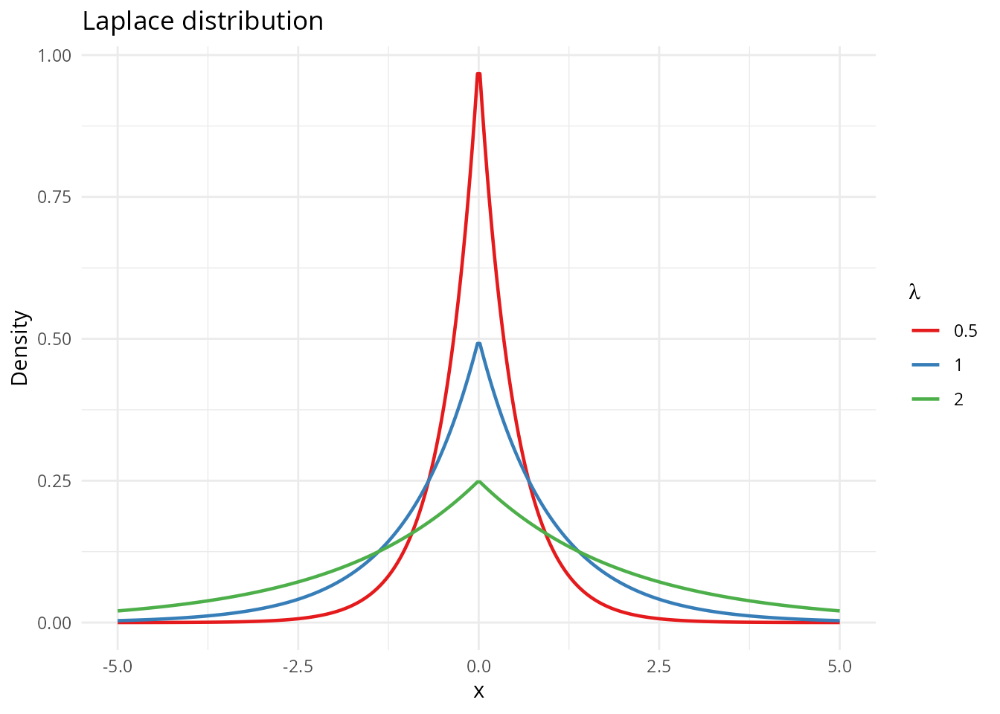
References
- Kotz S, Kozubowski TJ, Podgorski K (2001). The Laplace Distribution and Generalizations. Birkhauser. DOI: 10.1007/978-1-4612-0173-1
Asymmetric Laplace
The asymmetric Laplace distribution extends the symmetric Laplace by adding a skewness parameter \(\kappa > 0\). When \(\kappa = 1\) the distribution reduces to the symmetric Laplace; values in \((0, 1)\) produce right skew and values in \((1, \infty)\) produce left skew. The asymmetric Laplace arises naturally in Bayesian quantile regression, where the likelihood for the \(\tau\)-th quantile takes this form.
\[f(x \mid \mu, \lambda, \kappa) = \frac{\kappa}{\lambda(\kappa^2 + 1)} \begin{cases} \exp\!\left(-\frac{\kappa |x - \mu|}{\lambda}\right) & x \geq \mu \\ \exp\!\left(-\frac{|x - \mu|}{\kappa\lambda}\right) & x < \mu \end{cases}\]
| Parameter | Description | Constraint |
|---|---|---|
| \(\mu\) | Location | \(\mu \in \mathbb{R}\) |
| \(\lambda\) | Scale | \(\lambda > 0\) |
| \(\kappa\) | Asymmetry | \(\kappa > 0\) |
Functions:
dalaplace(x, location, scale, kappa, log),
palaplace(q, location, scale, kappa),
qalaplace(p, location, scale, kappa),
ralaplace(n, location, scale, kappa)
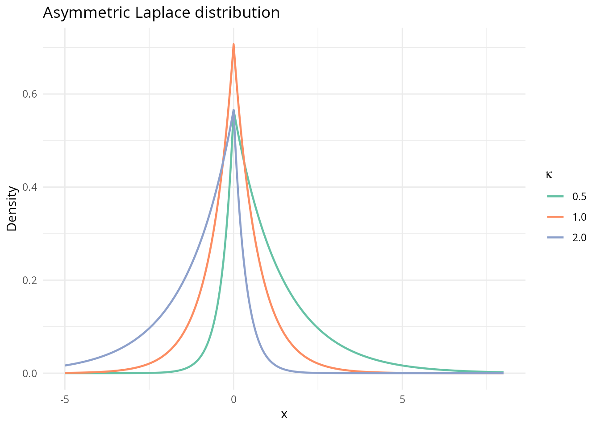
References
- Kotz S, Kozubowski TJ, Podgorski K (2001). The Laplace Distribution and Generalizations. Birkhauser. DOI: 10.1007/978-1-4612-0173-1
- Yu K, Zhang J (2005). “A Three-Parameter Asymmetric Laplace Distribution and its Extension.” Communications in Statistics – Theory and Methods, 34(9-10), 1867-1879. DOI: 10.1080/03610920500199018
Log-Laplace
The log-Laplace distribution is the distribution of \(\exp(X)\) when \(X\) follows a symmetric Laplace distribution. It is a heavy-tailed distribution on the positive real line, useful for modeling financial returns and insurance claim sizes.
\[f(x \mid \mu, \lambda) = \frac{1}{2\lambda x} \exp\!\left(-\frac{|\log x - \mu|}{\lambda}\right), \quad x > 0\]
| Parameter | Description | Constraint |
|---|---|---|
| \(\mu\) | Location (of the underlying Laplace) | \(\mu \in \mathbb{R}\) |
| \(\lambda\) | Scale | \(\lambda > 0\) |
Functions:
dllaplace(x, location, scale, log),
pllaplace(q, location, scale),
qllaplace(p, location, scale),
rllaplace(n, location, scale)
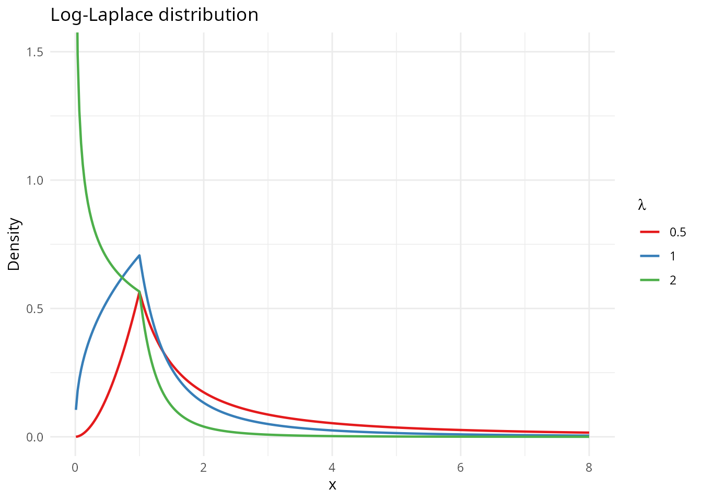
Asymmetric log-Laplace
The asymmetric log-Laplace distribution extends the log-Laplace to allow for skewness via the \(\kappa\) parameter, following the same construction as the asymmetric Laplace but on the log scale. If \(X\) follows an asymmetric Laplace distribution, then \(\exp(X)\) follows an asymmetric log-Laplace distribution.
\[f(x \mid \mu, \lambda, \kappa) = \frac{\kappa}{\lambda x (\kappa^2 + 1)} \begin{cases} \exp\!\left(-\frac{\kappa |\log x - \mu|}{\lambda}\right) & x \geq e^\mu \\ \exp\!\left(-\frac{|\log x - \mu|}{\kappa\lambda}\right) & x < e^\mu \end{cases}\]
| Parameter | Description | Constraint |
|---|---|---|
| \(\mu\) | Location (log scale) | \(\mu \in \mathbb{R}\) |
| \(\lambda\) | Scale | \(\lambda > 0\) |
| \(\kappa\) | Asymmetry | \(\kappa > 0\) |
Functions:
dallaplace(x, location, scale, kappa, log),
pallaplace(q, location, scale, kappa),
qallaplace(p, location, scale, kappa),
rallaplace(n, location, scale, kappa)
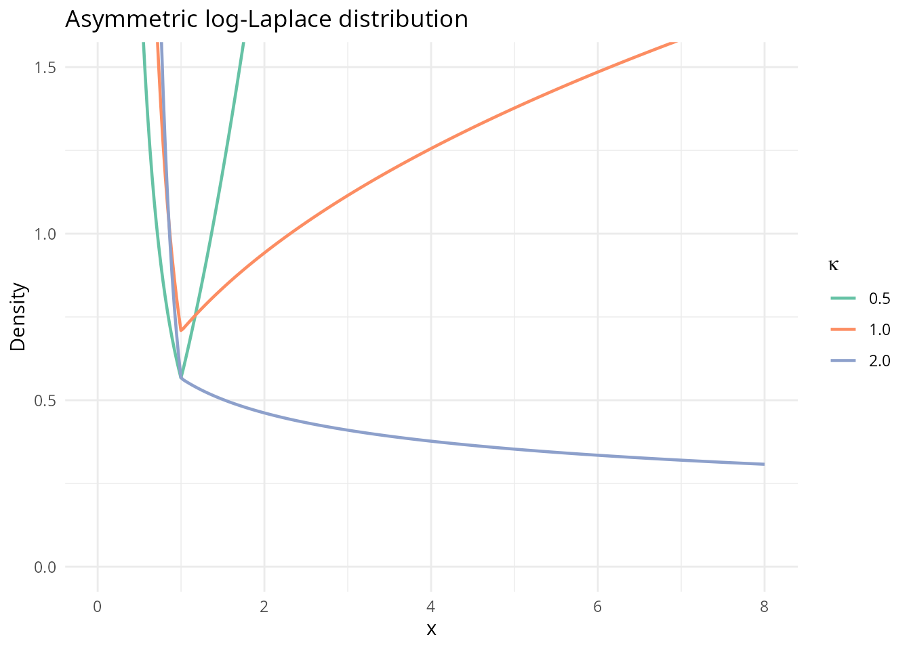
Skew-Laplace
The skew-Laplace distribution is an alternative skewed extension of the Laplace, parameterized by location \(\mu\) and two positive scale parameters \(\alpha\) and \(\beta\) that independently control the rate of decay on the left and right sides of the mode. When \(\alpha = \beta\) the distribution is symmetric.
\[f(x \mid \mu, \alpha, \beta) = \frac{1}{\alpha + \beta} \begin{cases} \exp\!\bigl((x - \mu)/\alpha\bigr) & x < \mu \\ \exp\!\bigl(-(x - \mu)/\beta\bigr) & x \geq \mu \end{cases}\]
| Parameter | Description | Constraint |
|---|---|---|
| \(\mu\) | Location (mode) | \(\mu \in \mathbb{R}\) |
| \(\alpha\) | Left scale | \(\alpha > 0\) |
| \(\beta\) | Right scale | \(\beta > 0\) |
Functions:
dslaplace(x, mu, alpha, beta, log),
pslaplace(q, mu, alpha, beta),
qslaplace(p, mu, alpha, beta),
rslaplace(n, mu, alpha, beta)
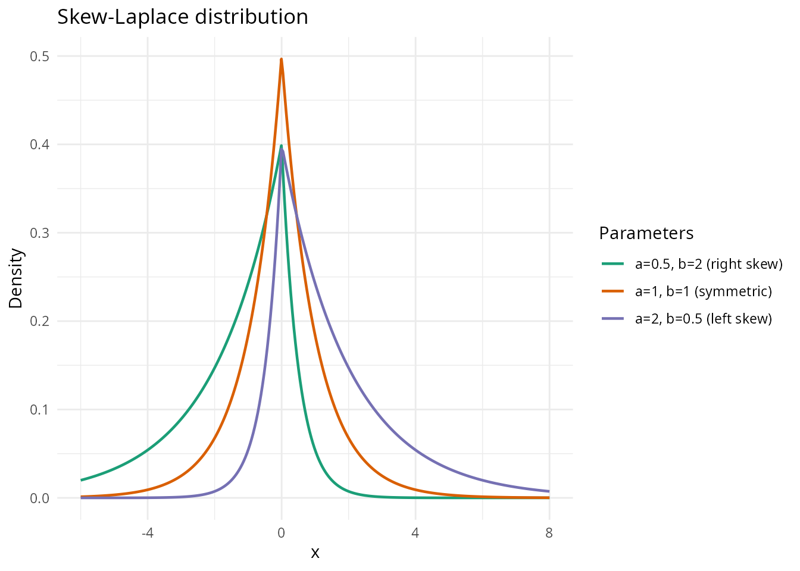
References
- Kotz S, Kozubowski TJ, Podgorski K (2001). The Laplace Distribution and Generalizations. Birkhauser. DOI: 10.1007/978-1-4612-0173-1
Laplace mixture
A finite mixture of \(M\) Laplace components, useful for modeling multimodal or heavy-tailed data.
\[f(x) = \sum_{m=1}^M p_m \,\frac{1}{2\lambda_m}\exp\!\left(-\frac{|x - \mu_m|}{\lambda_m}\right)\]
where the mixing weights \(p_m\) are positive and sum to one.
| Parameter | Description | Constraint |
|---|---|---|
| \(p\) | Mixing weights (length \(M\)) | \(p_m > 0\), \(\sum p_m = 1\) |
| \(\mu\) | Component locations (length \(M\)) | \(\mu_m \in \mathbb{R}\) |
| \(\lambda\) | Component scales (length \(M\)) | \(\lambda_m > 0\) |
Functions:
dlaplacem(x, p, location, scale, log),
plaplacem(q, p, location, scale),
rlaplacem(n, p, location, scale)
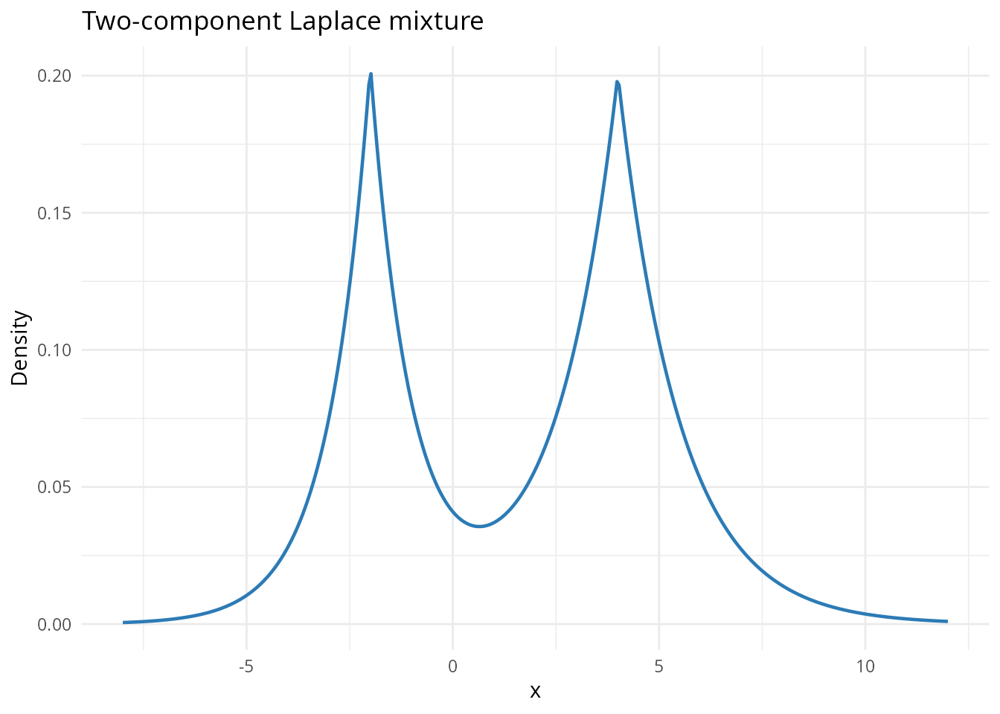
References
- Kotz S, Kozubowski TJ, Podgorski K (2001). The Laplace Distribution and Generalizations. Birkhauser. DOI: 10.1007/978-1-4612-0173-1
Laplace (precision)
The Laplace distribution reparameterized in terms of precision \(\tau = 1/\lambda\) rather than scale \(\lambda\). This parameterization is convenient in models where the precision is assigned a conjugate prior.
\[f(x \mid \mu, \tau) = \frac{\tau}{2} \exp\!\bigl(-\tau |x - \mu|\bigr)\]
| Parameter | Description | Constraint |
|---|---|---|
| \(\mu\) | Location | \(\mu \in \mathbb{R}\) |
| \(\tau\) | Precision | \(\tau > 0\) |
Functions: dlaplacep(x, mu, tau, log),
plaplacep(q, mu, tau), qlaplacep(p, mu, tau),
rlaplacep(n, mu, tau)
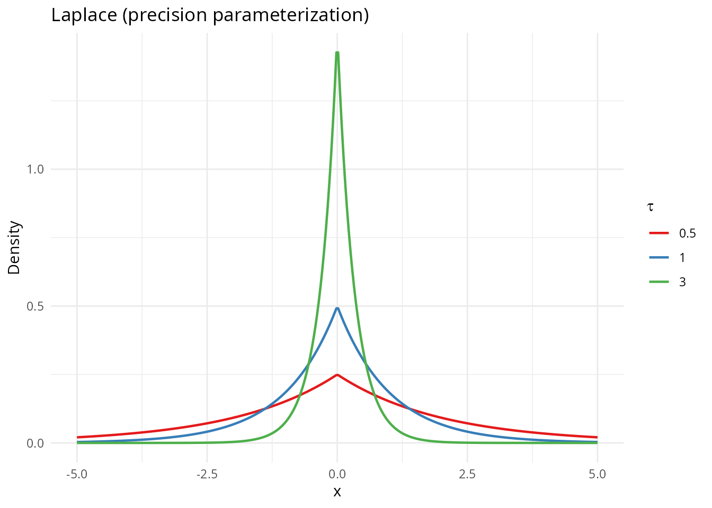
Student-t
The three-parameter Student-t distribution generalizes R’s built-in
dt by adding location and scale. It provides a robust
alternative to the normal distribution, with heavier tails controlled by
the degrees of freedom \(\nu\). As
\(\nu \to \infty\) the density
converges to the normal; at \(\nu = 1\)
it reduces to the Cauchy.
\[f(x \mid \mu, \sigma, \nu) = \frac{\Gamma\!\bigl((\nu+1)/2\bigr)}{\sigma\sqrt{\nu\pi}\;\Gamma(\nu/2)} \left(1 + \frac{1}{\nu}\left(\frac{x-\mu}{\sigma}\right)^2\right)^{\!-(\nu+1)/2}\]
| Parameter | Description | Constraint |
|---|---|---|
| \(\mu\) | Location | \(\mu \in \mathbb{R}\) |
| \(\sigma\) | Scale | \(\sigma > 0\) |
| \(\nu\) | Degrees of freedom | \(\nu > 0\) |
Functions: dst(x, mu, sigma, nu, log),
pst(q, mu, sigma, nu), qst(p, mu, sigma, nu),
rst(n, mu, sigma, nu)
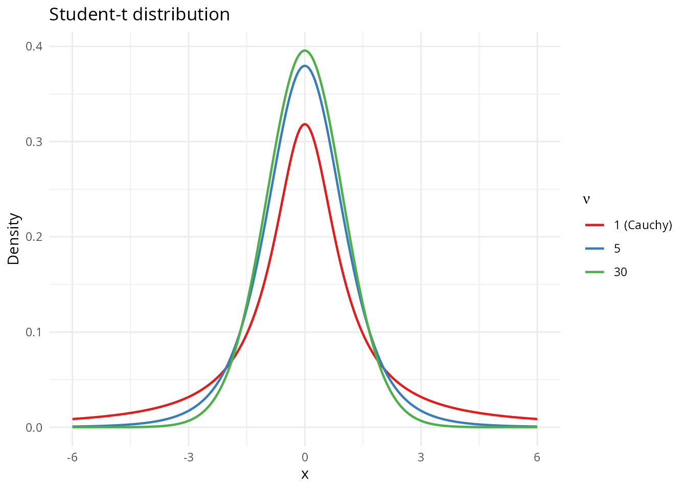
References
- Lange KL, Little RJA, Taylor JMG (1989). “Robust Statistical Modeling Using the t Distribution.” Journal of the American Statistical Association, 84(408), 881-896. DOI: 10.1080/01621459.1989.10478852
Student-t (precision)
The Student-t reparameterized with precision \(\tau = 1/\sigma^2\) in place of scale \(\sigma\). Internally converts to the scale parameterization via \(\sigma = 1/\sqrt{\tau}\).
\[f(x \mid \mu, \tau, \nu) = \frac{\Gamma\!\bigl((\nu+1)/2\bigr)}{\sqrt{\nu\pi/\tau}\;\Gamma(\nu/2)} \left(1 + \frac{\tau}{\nu}(x-\mu)^2\right)^{\!-(\nu+1)/2}\]
| Parameter | Description | Constraint |
|---|---|---|
| \(\mu\) | Location | \(\mu \in \mathbb{R}\) |
| \(\tau\) | Precision (\(1/\sigma^2\)) | \(\tau > 0\) |
| \(\nu\) | Degrees of freedom | \(\nu > 0\) |
Functions: dstp(x, mu, tau, nu, log),
pstp(q, mu, tau, nu), qstp(p, mu, tau, nu),
rstp(n, mu, tau, nu)
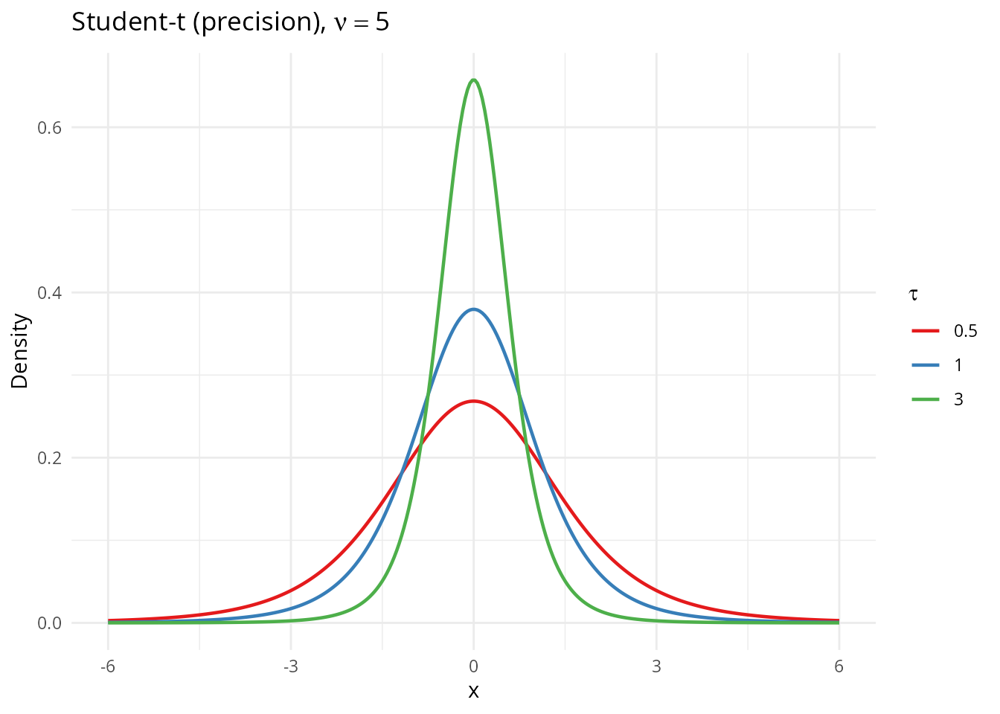
References
- Lange KL, Little RJA, Taylor JMG (1989). “Robust Statistical Modeling Using the t Distribution.” Journal of the American Statistical Association, 84(408), 881-896. DOI: 10.1080/01621459.1989.10478852
Normal (precision)
The normal distribution parameterized with precision \(\tau = 1/\sigma^2\) rather than standard deviation. This is the natural parameterization in many Bayesian conjugate models, where \(\tau\) is assigned a gamma prior.
\[f(x \mid \mu, \tau) = \sqrt{\frac{\tau}{2\pi}} \exp\!\left(-\frac{\tau}{2}(x - \mu)^2\right)\]
| Parameter | Description | Constraint |
|---|---|---|
| \(\mu\) | Mean | \(\mu \in \mathbb{R}\) |
| \(\tau\) | Precision (\(1/\sigma^2\)) | \(\tau > 0\) |
Functions: dnormp(x, mean, prec, log),
pnormp(q, mean, prec), qnormp(p, mean, prec),
rnormp(n, mean, prec)
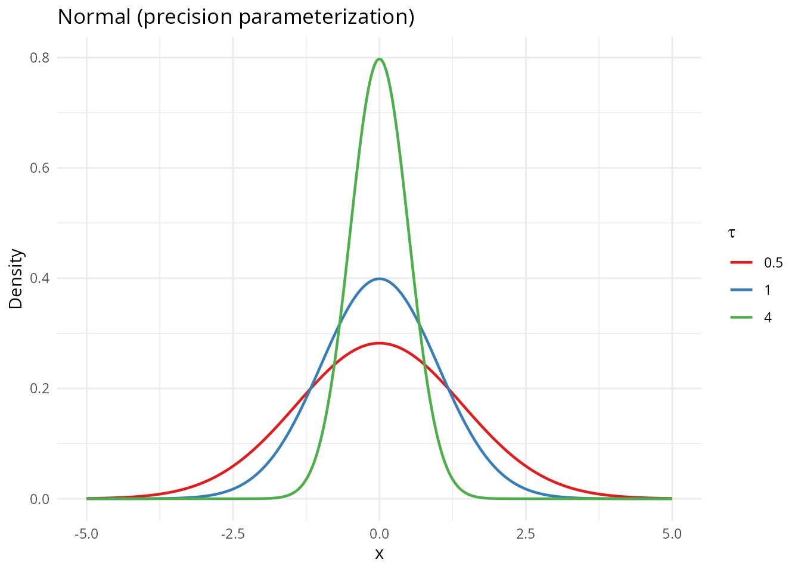
Normal (variance)
The normal distribution parameterized directly with variance \(\sigma^2\) rather than standard deviation.
Wraps base R’s dnorm with sd = sqrt(var).
\[f(x \mid \mu, \sigma^2) = \frac{1}{\sqrt{2\pi\sigma^2}} \exp\!\left(-\frac{(x - \mu)^2}{2\sigma^2}\right)\]
| Parameter | Description | Constraint |
|---|---|---|
| \(\mu\) | Mean | \(\mu \in \mathbb{R}\) |
| \(\sigma^2\) | Variance | \(\sigma^2 > 0\) |
Functions: dnormv(x, mean, var, log),
pnormv(q, mean, var), qnormv(p, mean, var),
rnormv(n, mean, var)
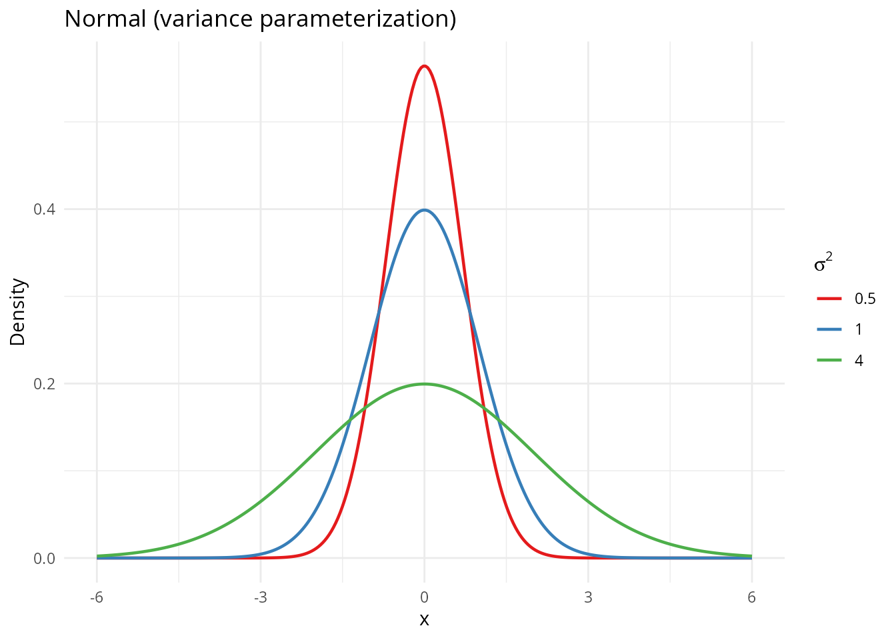
Normal mixture
A finite mixture of \(M\) normal components, useful as a flexible likelihood or as a prior for multimodal parameters.
\[f(x) = \sum_{m=1}^M p_m \,\frac{1}{\sigma_m\sqrt{2\pi}}\exp\!\left(-\frac{(x - \mu_m)^2}{2\sigma_m^2}\right)\]
| Parameter | Description | Constraint |
|---|---|---|
| \(p\) | Mixing weights (length \(M\)) | \(p_m > 0\), \(\sum p_m = 1\) |
| \(\mu\) | Component means (length \(M\)) | \(\mu_m \in \mathbb{R}\) |
| \(\sigma\) | Component standard deviations (length \(M\)) | \(\sigma_m > 0\) |
Functions:
dnormm(x, p, mu, sigma, log),
pnormm(q, p, mu, sigma),
rnormm(n, p, mu, sigma)
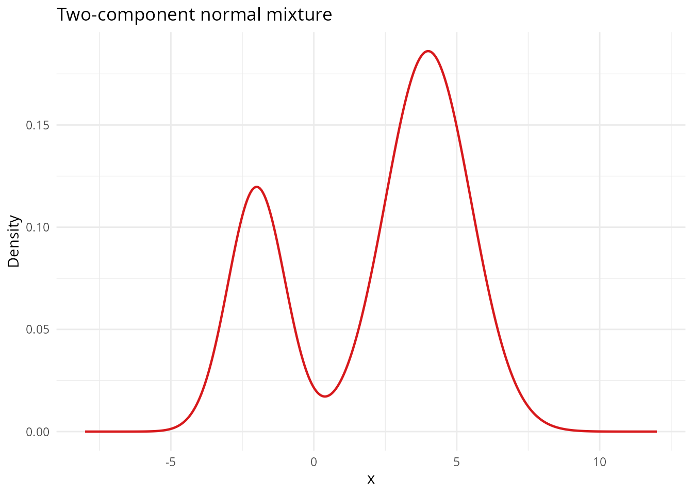
Normal-Laplace
The normal-Laplace distribution is the convolution of a normal and a skew-Laplace random variable. It arises in financial modeling where returns exhibit both Gaussian noise and exponential jumps. The density involves the complementary error function and has four parameters controlling location, Gaussian width, and left/right tail rates.
\[f(x \mid \mu, \sigma, \alpha, \beta) = \frac{\alpha\beta}{\alpha+\beta}\left[\Phi\!\left(\frac{x-\mu}{\sigma} - \alpha\sigma\right)e^{\alpha\mu + \alpha^2\sigma^2/2 - \alpha x} + \Phi\!\left(-\frac{x-\mu}{\sigma} + \beta\sigma\right)e^{-\beta\mu + \beta^2\sigma^2/2 + \beta x}\right]\]
where \(\Phi\) is the standard normal CDF.
| Parameter | Description | Constraint |
|---|---|---|
| \(\mu\) | Location | \(\mu \in \mathbb{R}\) |
| \(\sigma\) | Gaussian scale | \(\sigma > 0\) |
| \(\alpha\) | Left tail rate | \(\alpha > 0\) |
| \(\beta\) | Right tail rate | \(\beta > 0\) |
Functions:
dnormlaplace(x, mu, sigma, alpha, beta, log),
rnormlaplace(n, mu, sigma, alpha, beta)
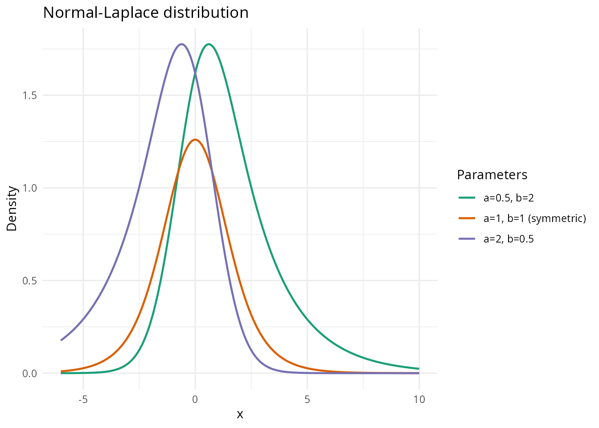
References
- Reed WJ (2006). “The Normal-Laplace Distribution and its Relatives.” In N Balakrishnan, IG Bairamov, OL Gebizlioglu (eds.), Advances in Distribution Theory, Order Statistics, and Inference, 61-74. Birkhauser. DOI: 10.1007/0-8176-4487-3_4
Power exponential
The power exponential (generalized normal) distribution is a symmetric family indexed by a kurtosis parameter \(\kappa > 0\). At \(\kappa = 2\) it reduces to the normal distribution; at \(\kappa = 1\) it is the Laplace; and as \(\kappa \to \infty\) it approaches the uniform on \([\mu - \sigma, \mu + \sigma]\).
\[f(x \mid \mu, \sigma, \kappa) = \frac{\kappa}{2\sigma\,\Gamma(1/\kappa)} \exp\!\left(-\left|\frac{x - \mu}{\sigma}\right|^{\kappa}\right)\]
| Parameter | Description | Constraint |
|---|---|---|
| \(\mu\) | Location | \(\mu \in \mathbb{R}\) |
| \(\sigma\) | Scale | \(\sigma > 0\) |
| \(\kappa\) | Kurtosis (2 = normal, 1 = Laplace) | \(\kappa > 0\) |
Functions:
dpe(x, mu, sigma, kappa, log),
ppe(q, mu, sigma, kappa),
qpe(p, mu, sigma, kappa),
rpe(n, mu, sigma, kappa)
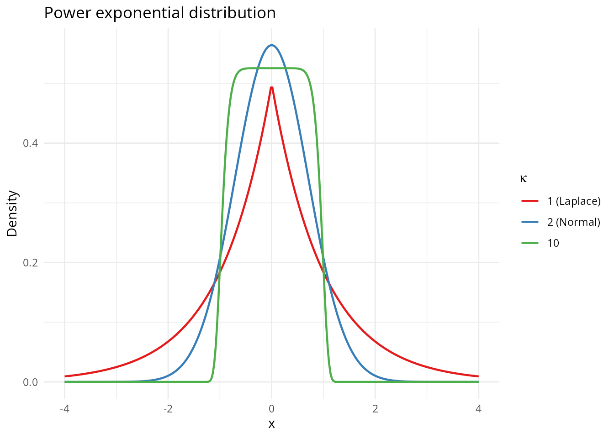
References
- Subbotin MT (1923). “On the Law of Frequency of Errors.” Matematicheskii Sbornik, 31, 296-301.
- Nadarajah S (2005). “A Generalized Normal Distribution.” Journal of Applied Statistics, 32(7), 685-694. DOI: 10.1080/02664760500079464
ExGaussian
The exponentially-modified Gaussian (ExGaussian) distribution is the convolution of a normal and an exponential random variable: if \(X \sim \mathcal{N}(\mu, \sigma^2)\) and \(Y \sim \text{Exp}(\lambda)\), then \(Z = X + Y\) follows an ExGaussian distribution. It is widely used in reaction time modeling and chromatographic peak fitting.
\[f(z) = \frac{\lambda}{2} \exp\!\left(\frac{\lambda}{2}(2\mu + \lambda\sigma^2 - 2z)\right) \text{erfc}\!\left(\frac{\mu + \lambda\sigma^2 - z}{\sigma\sqrt{2}}\right)\]
The mean is \(\mu + 1/\lambda\) and the variance is \(\sigma^2 + 1/\lambda^2\).
| Parameter | Description | Constraint |
|---|---|---|
| \(\mu\) | Gaussian mean | \(\mu \in \mathbb{R}\) |
| \(\sigma\) | Gaussian scale | \(\sigma > 0\) |
| \(\lambda\) | Exponential rate | \(\lambda > 0\) |
Functions:
dexgaussian(x, mu, sigma, lambda, log),
pexgaussian(q, mu, sigma, lambda),
rexgaussian(n, mu, sigma, lambda)
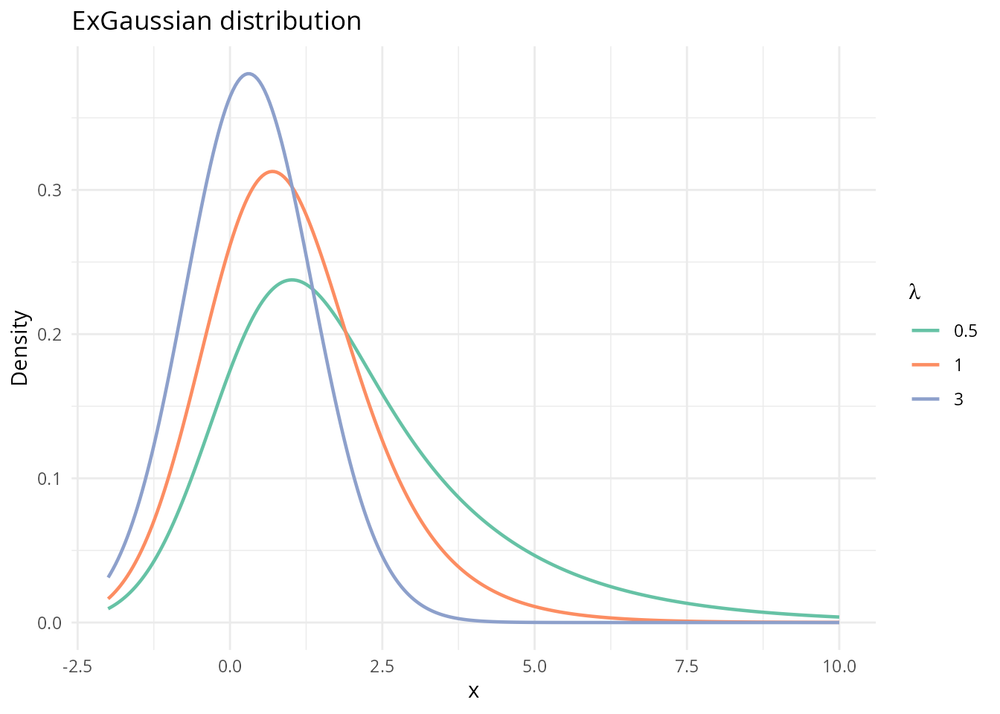
References
- Luce RD (1986). Response Times: Their Role in Inferring Elementary Mental Organization. Oxford University Press. ISBN: 978-0-19-503642-4.
- Grushka E (1972). “Characterization of Exponentially Modified Gaussian Peaks in Chromatography.” Analytical Chemistry, 44(11), 1733-1738. DOI: 10.1021/ac60319a011
Half-distributions
Half-distributions are formed by folding a symmetric distribution at zero and restricting to the positive real line. They are widely recommended as weakly informative prior distributions for scale and variance parameters in hierarchical models.
Half-Cauchy
The half-Cauchy distribution is the positive half of a Cauchy distribution centered at zero. Gelman (2006) recommends it as a default weakly informative prior for scale parameters in hierarchical models, with \(\alpha = 25\) providing broad but proper coverage.
\[f(x \mid \alpha) = \frac{2}{\pi\alpha\left(1 + (x/\alpha)^2\right)}, \quad x \geq 0\]
| Parameter | Description | Constraint |
|---|---|---|
| \(\alpha\) | Scale | \(\alpha > 0\) (default 25) |
Functions: dhalfcauchy(x, scale, log),
phalfcauchy(q, scale), qhalfcauchy(p, scale),
rhalfcauchy(n, scale)
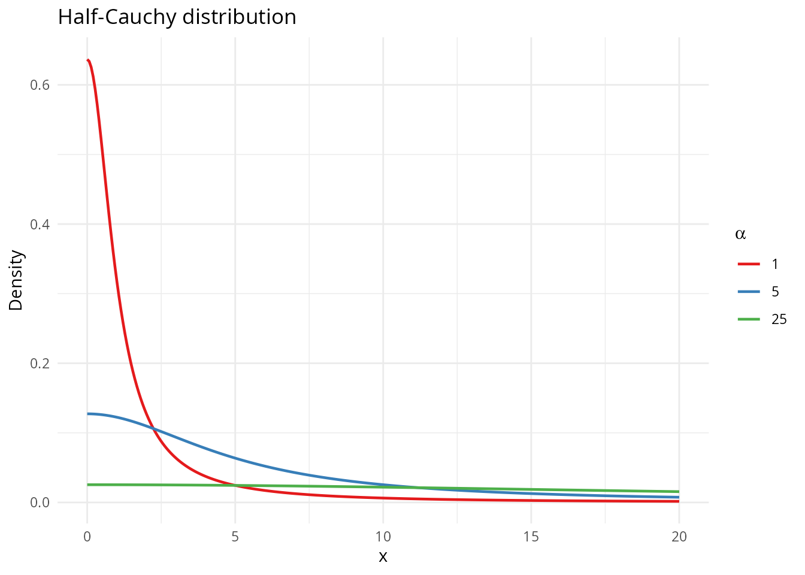
References
- Gelman A (2006). “Prior Distributions for Variance Parameters in Hierarchical Models.” Bayesian Analysis, 1(3), 515-533. DOI: 10.1214/06-BA117A
Half-normal
The half-normal distribution restricts the normal distribution to \(x \geq 0\). The default scale is \(\sqrt{\pi/2}\), which gives unit variance. It is a natural prior for standard deviation parameters when an informative scale is available.
\[f(x \mid \sigma) = \frac{\sqrt{2}}{\sigma\sqrt{\pi}} \exp\!\left(-\frac{x^2}{2\sigma^2}\right), \quad x \geq 0\]
| Parameter | Description | Constraint |
|---|---|---|
| \(\sigma\) | Scale | \(\sigma > 0\) (default \(\sqrt{\pi/2}\)) |
Functions: dhalfnorm(x, scale, log),
phalfnorm(q, scale), qhalfnorm(p, scale),
rhalfnorm(n, scale)
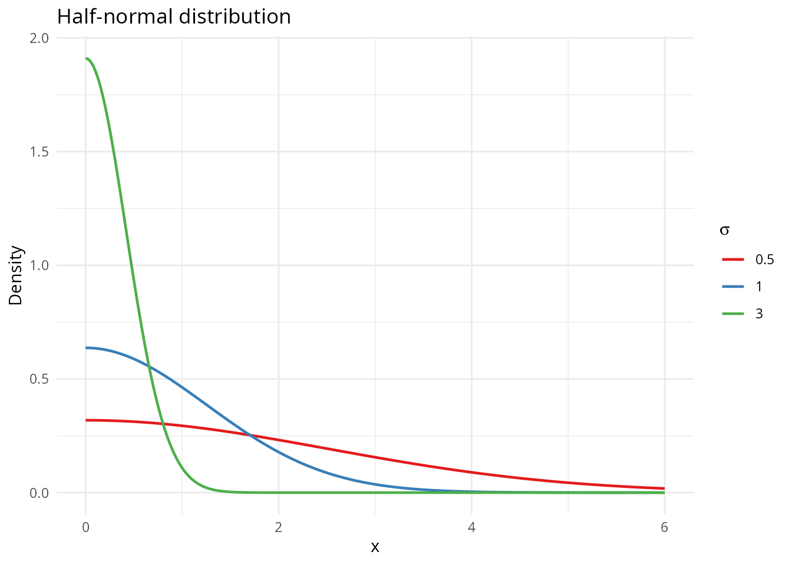
References
- Gelman A (2006). “Prior Distributions for Variance Parameters in Hierarchical Models.” Bayesian Analysis, 1(3), 515-533. DOI: 10.1214/06-BA117A
Half-t
The half-t distribution generalizes the half-Cauchy by introducing a degrees-of-freedom parameter \(\nu\). At \(\nu = 1\) it is the half-Cauchy; as \(\nu \to \infty\) it approaches the half-normal. This provides a family of priors that can be tuned between the heavy-tailed half-Cauchy and the lighter-tailed half-normal. Implemented via truncation of the three-parameter Student-t to \([0, \infty)\).
\[f(x \mid \alpha, \nu) = \frac{2}{\alpha}\frac{\Gamma\!\bigl((\nu+1)/2\bigr)}{\sqrt{\nu\pi}\;\Gamma(\nu/2)} \left(1 + \frac{1}{\nu}\left(\frac{x}{\alpha}\right)^2\right)^{\!-(\nu+1)/2}, \quad x \geq 0\]
| Parameter | Description | Constraint |
|---|---|---|
| \(\alpha\) | Scale | \(\alpha > 0\) (default 25) |
| \(\nu\) | Degrees of freedom | \(\nu > 0\) (default 1) |
Functions: dhalft(x, scale, nu, log),
phalft(q, scale, nu), qhalft(p, scale, nu),
rhalft(n, scale, nu)
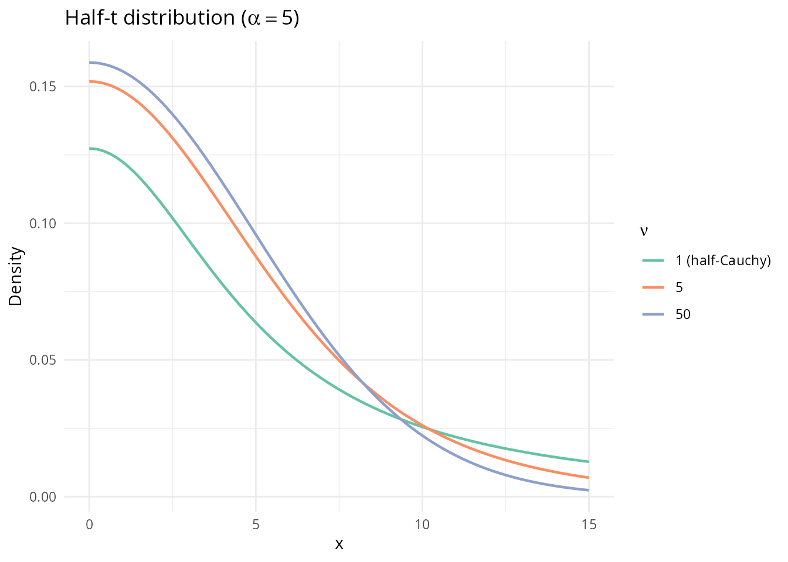
References
- Gelman A (2006). “Prior Distributions for Variance Parameters in Hierarchical Models.” Bayesian Analysis, 1(3), 515-533. DOI: 10.1214/06-BA117A
Positive-support distributions
Distributions on the positive real line serve as priors for variance, precision, and scale parameters.
Inverse gamma
The inverse gamma distribution is the distribution of \(1/X\) when \(X \sim \text{Gamma}(\alpha, \beta)\). It is the conjugate prior for the variance of a normal likelihood and one of the most common variance priors in Bayesian statistics, though it can be informative near zero for small shape parameters.
\[f(x \mid \alpha, \beta) = \frac{\beta^\alpha}{\Gamma(\alpha)} x^{-\alpha-1} \exp\!\left(-\frac{\beta}{x}\right), \quad x > 0\]
| Parameter | Description | Constraint |
|---|---|---|
| \(\alpha\) | Shape | \(\alpha > 0\) (default 1) |
| \(\beta\) | Scale | \(\beta > 0\) (default 1) |
Functions:
dinvgamma(x, shape, scale, log),
rinvgamma(n, shape, scale)
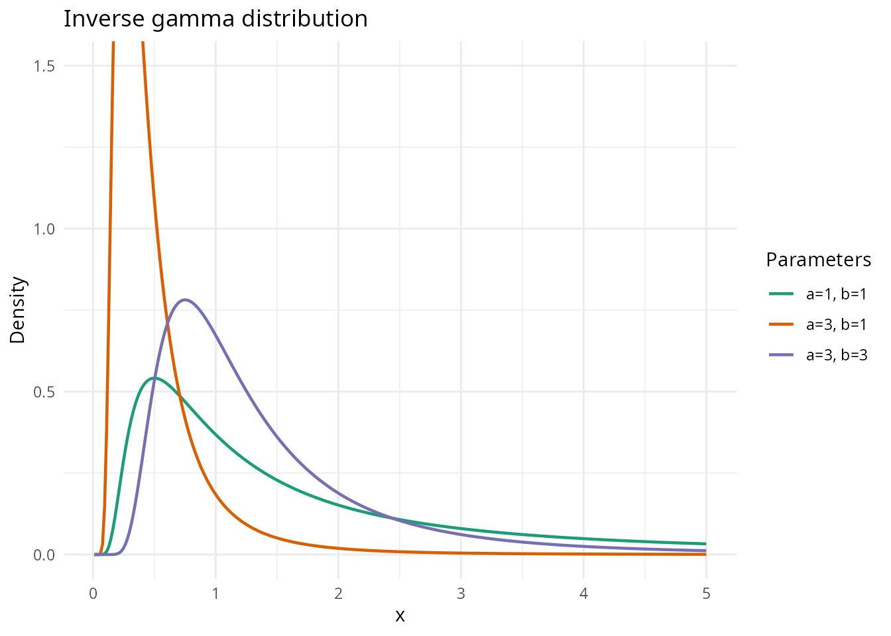
Inverse chi-squared
The scaled inverse chi-squared distribution is a special case of the inverse gamma with \(\alpha = \nu/2\) and \(\beta = \nu\lambda/2\), where \(\nu\) is degrees of freedom and \(\lambda\) is the scale. It is the conjugate prior for the variance of a normal distribution with known mean.
\[f(x \mid \nu, \lambda) = \frac{(\nu\lambda/2)^{\nu/2}}{\Gamma(\nu/2)} x^{-\nu/2 - 1} \exp\!\left(-\frac{\nu\lambda}{2x}\right), \quad x > 0\]
| Parameter | Description | Constraint |
|---|---|---|
| \(\nu\) | Degrees of freedom | \(\nu > 0\) |
| \(\lambda\) | Scale | \(\lambda > 0\) (default \(1/\nu\)) |
Functions:
dinvchisq(x, df, scale, log),
rinvchisq(n, df, scale)
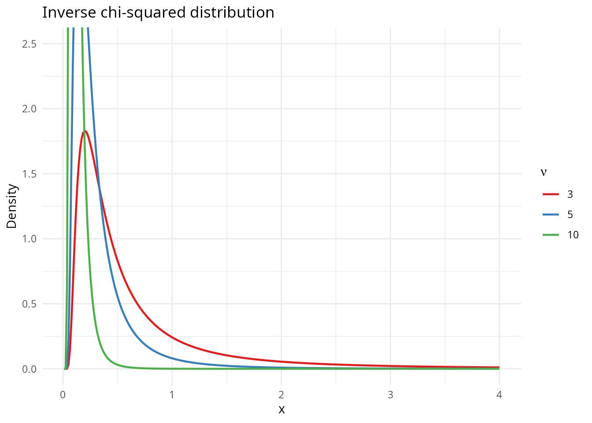
Inverse beta
The inverse beta distribution is the distribution of \(X/(1-X)\) when \(X \sim \text{Beta}(a, b)\). It is supported on \((0, \infty)\) and useful as a prior for positive parameters when the beta distribution’s \((0,1)\) support is too restrictive.
\[f(x \mid a, b) = \frac{x^{a-1}(1+x)^{-(a+b)}}{B(a,b)}, \quad x > 0\]
| Parameter | Description | Constraint |
|---|---|---|
| \(a\) | Shape 1 | \(a > 0\) |
| \(b\) | Shape 2 | \(b > 0\) |
Functions: dinvbeta(x, a, b, log),
rinvbeta(n, a, b)
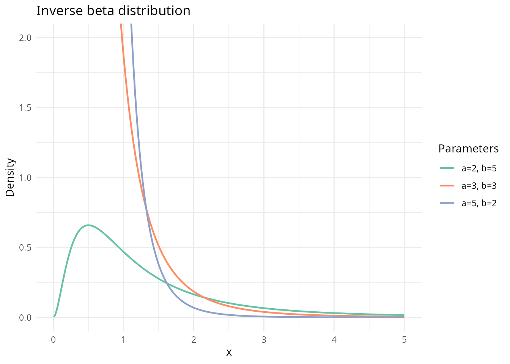
Inverse Gaussian
The inverse Gaussian distribution models the first passage time of a Brownian motion with positive drift. It is a two-parameter family on \((0, \infty)\) with a right-skewed, unimodal density.
\[f(x \mid \mu, \lambda) = \sqrt{\frac{\lambda}{2\pi x^3}} \exp\!\left(-\frac{\lambda(x - \mu)^2}{2\mu^2 x}\right), \quad x > 0\]
| Parameter | Description | Constraint |
|---|---|---|
| \(\mu\) | Mean | \(\mu > 0\) |
| \(\lambda\) | Shape (inverse-variance) | \(\lambda > 0\) |
Functions:
dinvgaussian(x, mu, lambda, log),
rinvgaussian(n, mu, lambda)
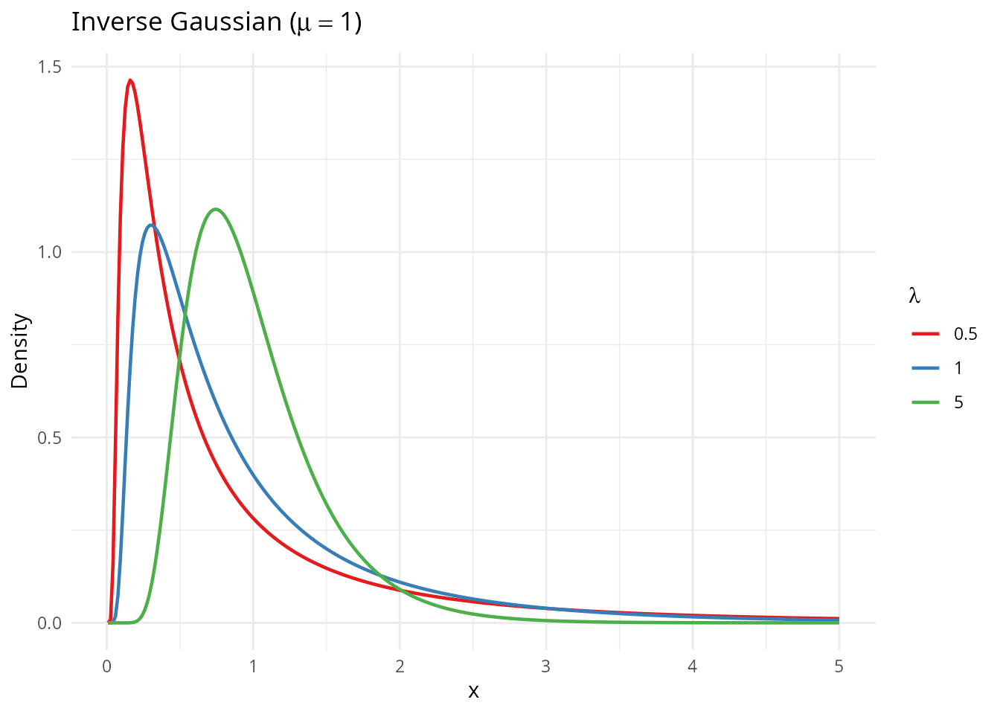
Pareto
The Pareto distribution is a power-law distribution on \([1, \infty)\) widely used to model income distributions, city sizes, and other phenomena exhibiting scaling behavior.
\[f(x \mid \alpha) = \alpha x^{-(\alpha+1)}, \quad x \geq 1\]
| Parameter | Description | Constraint |
|---|---|---|
| \(\alpha\) | Shape (tail index) | \(\alpha > 0\) |
Functions: dpareto(x, alpha, log),
ppareto(q, alpha), qpareto(p, alpha),
rpareto(n, alpha)
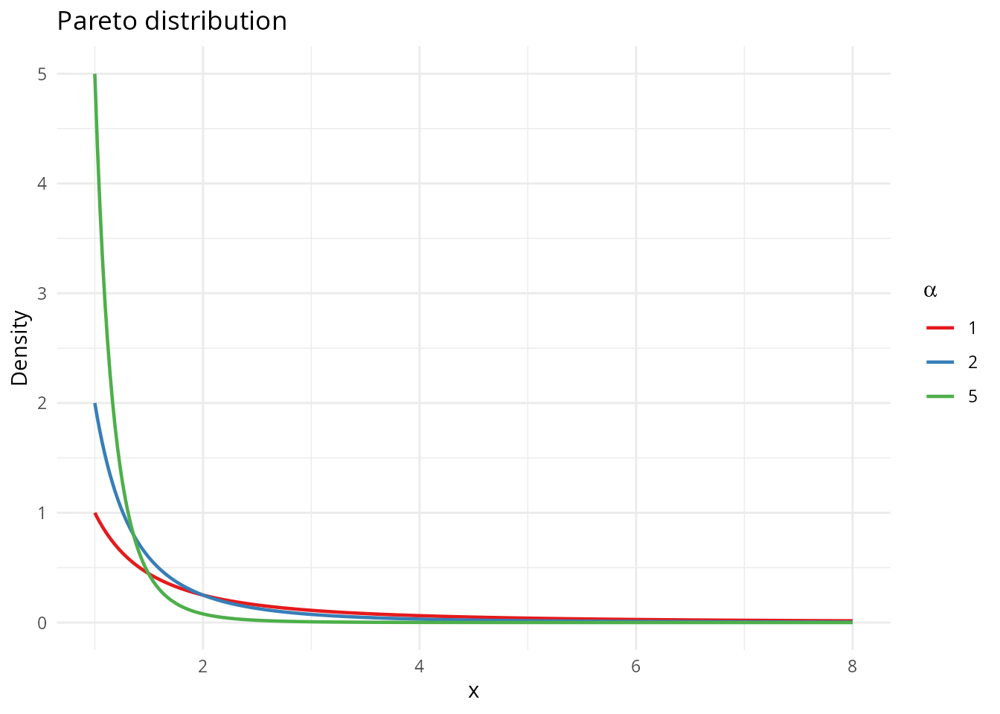
Generalized Pareto
The generalized Pareto distribution (GPD) extends the Pareto by adding location and shape parameters. It arises naturally as the limiting distribution of exceedances over a high threshold (Pickands, 1975), making it fundamental to extreme value theory.
\[f(x \mid \mu, \sigma, \xi) = \frac{1}{\sigma}\left(1 + \xi\frac{x - \mu}{\sigma}\right)^{-1/\xi - 1}\]
for \(\xi \neq 0\), and \(f(x) = \sigma^{-1}\exp(-(x-\mu)/\sigma)\) for \(\xi = 0\) (exponential case).
| Parameter | Description | Constraint |
|---|---|---|
| \(\mu\) | Location (threshold) | \(\mu \in \mathbb{R}\) |
| \(\sigma\) | Scale | \(\sigma > 0\) |
| \(\xi\) | Shape | \(\xi \in \mathbb{R}\) |
Functions: dgpd(x, mu, sigma, xi, log),
rgpd(n, mu, sigma, xi)
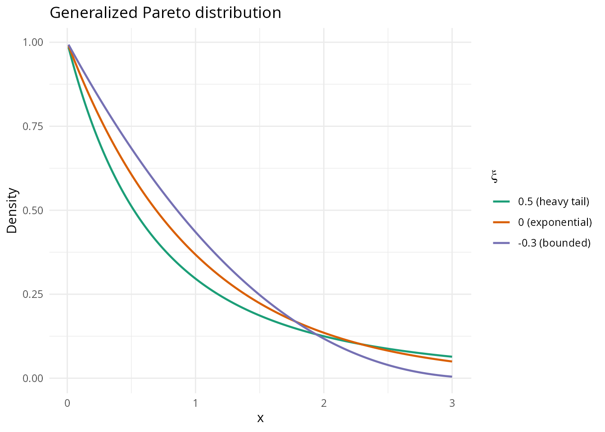
References
- Pickands J (1975). “Statistical Inference Using Extreme Order Statistics.” The Annals of Statistics, 3, 119-131. DOI: 10.1214/aos/1176343003
Log-normal (precision)
The log-normal distribution reparameterized with precision \(\tau = 1/\sigma^2\) (or optionally variance) on the log scale, so that \(\log(X) \sim \mathcal{N}(\mu, 1/\tau)\). This is convenient in models where the log-scale precision is the natural parameter.
\[f(x \mid \mu, \tau) = \frac{\sqrt{\tau}}{x\sqrt{2\pi}} \exp\!\left(-\frac{\tau}{2}(\log x - \mu)^2\right), \quad x > 0\]
| Parameter | Description | Constraint |
|---|---|---|
| \(\mu\) | Log-scale mean | \(\mu \in \mathbb{R}\) |
| \(\tau\) | Log-scale precision | \(\tau > 0\) |
Functions:
dlnormp(x, mu, tau, var, log),
plnormp(q, mu, tau), qlnormp(p, mu, tau),
rlnormp(n, mu, tau, var)
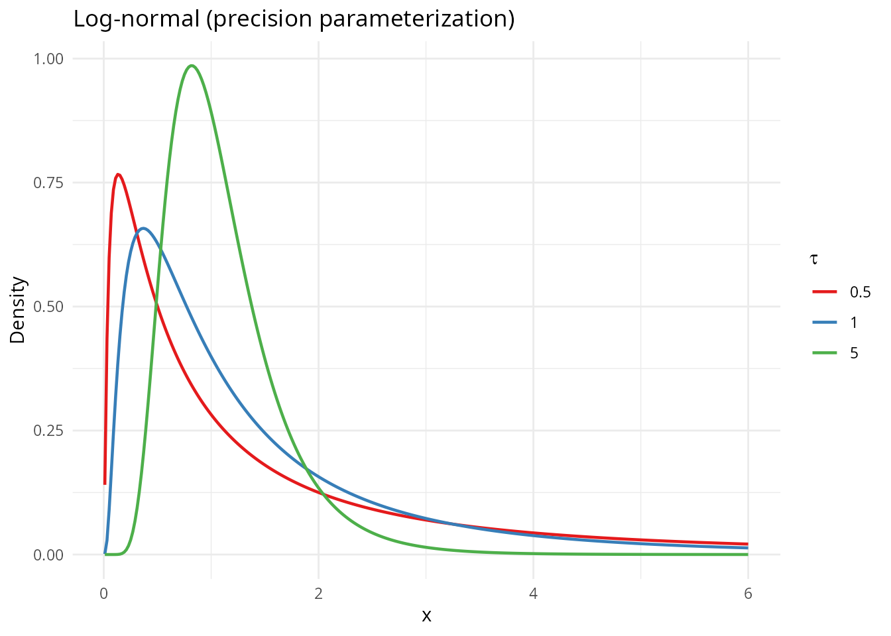
Discrete distributions
Bernoulli
The Bernoulli distribution models a single binary trial with success probability \(p\). It is the binomial distribution with \(n = 1\) and serves as the foundation for logistic regression and probit models. The beta distribution is its conjugate prior.
\[\Pr(X = x \mid p) = p^x (1-p)^{1-x}, \quad x \in \{0, 1\}\]
| Parameter | Description | Constraint |
|---|---|---|
| \(p\) | Success probability | \(p \in [0, 1]\) |
Functions: dbern(x, prob, log),
pbern(q, prob), qbern(p, prob),
rbern(n, prob)
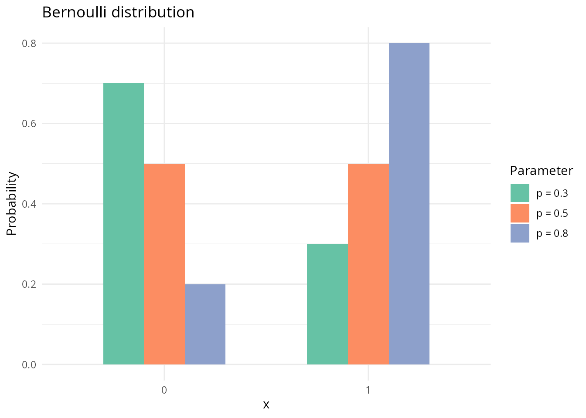
Categorical
The categorical distribution generalizes the Bernoulli to \(k\) categories. It describes the outcome of
a single trial with \(k\) possible
results, each occurring with probability \(p_j\). The Dirichlet distribution is its
conjugate prior. The function dcat accepts either an
integer-valued vector or an indicator matrix as input.
\[\Pr(X = j \mid p) = p_j, \quad j \in \{1, \ldots, k\}, \quad \sum_{j=1}^k p_j = 1\]
| Parameter | Description | Constraint |
|---|---|---|
| \(p\) | Probability vector (length \(k\)) | \(p_j \geq 0\), \(\sum p_j = 1\) |
Functions: dcat(x, p, log),
qcat(pr, p), rcat(n, p)
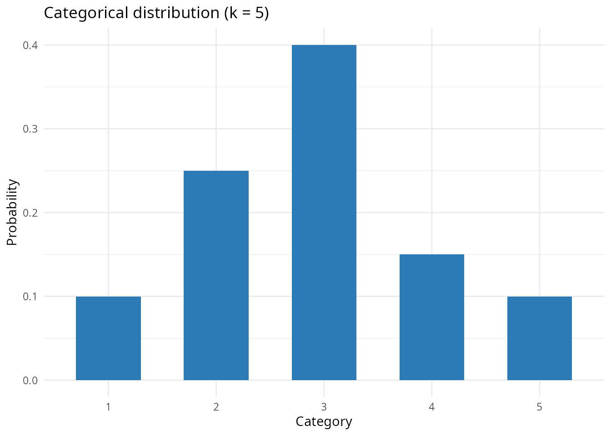
Generalized Poisson
The generalized Poisson distribution (Consul, 1989) extends the standard Poisson by adding a dispersion parameter \(\omega \in [0, 1)\) that allows both underdispersion and overdispersion. When \(\omega = 0\) it reduces to the ordinary Poisson.
\[\Pr(X = x \mid \lambda, \omega) = \frac{\lambda(\lambda + x\omega)^{x-1}}{x!} \exp\!\bigl(-\lambda - x\omega\bigr), \quad x = 0, 1, 2, \ldots\]
| Parameter | Description | Constraint |
|---|---|---|
| \(\lambda\) | Rate | \(\lambda > 0\) |
| \(\omega\) | Dispersion | \(\omega \in [0, 1)\) |
Functions:
dgpois(x, lambda, omega, log)
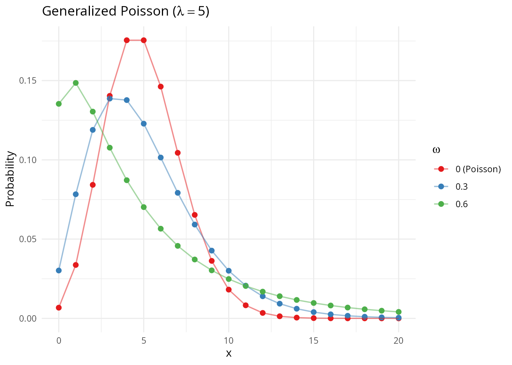
Skew-discrete Laplace
The skew-discrete Laplace distribution is a discrete distribution on the integers, parameterized by \(p, q \in [0, 1]\). It is the discrete analogue of the skew-Laplace distribution and is useful for modeling integer-valued time series with asymmetric behavior.
\[\Pr(X = x \mid p, q) = \frac{(1-p)(1-q)}{1-pq} \begin{cases} p^{|x|} & x \leq 0 \\ q^x & x > 0 \end{cases}\]
| Parameter | Description | Constraint |
|---|---|---|
| \(p\) | Left tail decay | \(p \in [0, 1]\) |
| \(q\) | Right tail decay | \(q \in [0, 1]\) |
Functions: dsdlaplace(x, p, q, log),
psdlaplace(x, p, q), qsdlaplace(prob, p, q),
rsdlaplace(n, p, q)
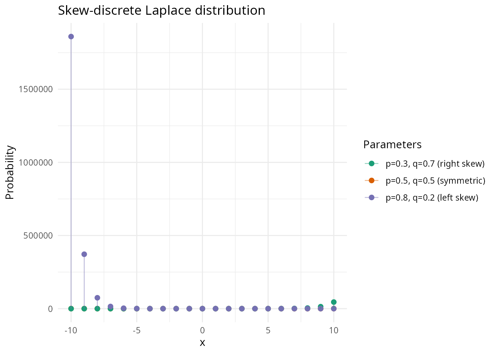
References
- Kozubowski TJ, Inusah S (2006). “A Skew Laplace Distribution on Integers.” Annals of the Institute of Statistical Mathematics, 58(3), 555-571. DOI: 10.1007/s10463-005-0029-1
Multivariate continuous
Multivariate distributions are parameterized by a mean vector \(\mu\) and a \(k \times k\) positive-definite matrix that controls scale and correlation. Each family below is available in up to four parameterizations: covariance matrix \(\Sigma\), Cholesky factor of \(\Sigma\), precision matrix \(\Omega = \Sigma^{-1}\), and Cholesky factor of \(\Omega\). The Cholesky variants avoid redundant decomposition when the factor is a model parameter, and the precision variants are natural in Gaussian Markov random fields and conditional models.
Multivariate normal
The multivariate normal distribution is the workhorse of Bayesian inference.
\[f(x \mid \mu, \Sigma) = (2\pi)^{-k/2} |\Sigma|^{-1/2} \exp\!\left(-\frac{1}{2}(x - \mu)^T \Sigma^{-1} (x - \mu)\right)\]
| Parameter | Description | Constraint |
|---|---|---|
| \(\mu\) | Mean vector (length \(k\)) | \(\mu \in \mathbb{R}^k\) |
| \(\Sigma\) | Covariance matrix (\(k \times k\)) | Positive-definite |
Parameterizations:
| Variant | Function prefix | Scale parameter |
|---|---|---|
| Covariance |
dmvn / rmvn
|
\(\Sigma\) (covariance matrix) |
| Cholesky |
dmvnc / rmvnc
|
\(U\) (upper Cholesky of \(\Sigma\)) |
| Precision |
dmvnp / rmvnp
|
\(\Omega\) (precision matrix) |
| Precision-Cholesky |
dmvnpc / rmvnpc
|
\(U\) (upper Cholesky of \(\Omega\)) |
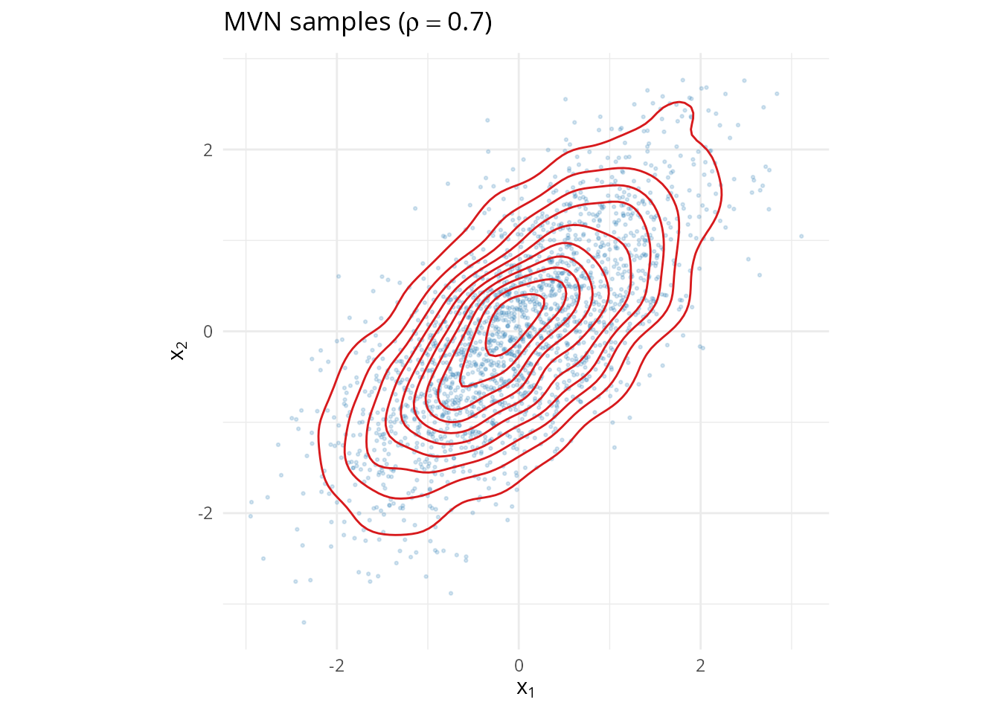
Multivariate t
The multivariate t distribution generalizes the multivariate normal by replacing the quadratic form with a scaled version that accommodates heavier tails. As \(\nu \to \infty\) it converges to the MVN; at \(\nu = 1\) it is the multivariate Cauchy. Internally, when \(\nu > 10000\) the MVN density is returned for numerical stability.
\[f(x \mid \mu, S, \nu) = \frac{\Gamma\!\bigl((\nu+k)/2\bigr)}{\Gamma(\nu/2)(\nu\pi)^{k/2}|S|^{1/2}} \left(1 + \frac{1}{\nu}(x-\mu)^T S^{-1} (x-\mu)\right)^{-(\nu+k)/2}\]
| Parameter | Description | Constraint |
|---|---|---|
| \(\mu\) | Mean vector (length \(k\)) | \(\mu \in \mathbb{R}^k\) |
| \(S\) | Scale matrix (\(k \times k\)) | Positive-definite |
| \(\nu\) | Degrees of freedom | \(\nu > 0\) |
Parameterizations:
| Variant | Function prefix | Scale parameter |
|---|---|---|
| Covariance |
dmvt / rmvt
|
\(S\), df
|
| Cholesky |
dmvtc / rmvtc
|
\(U\) (Cholesky of \(S\)), df
|
| Precision |
dmvtp / rmvtp
|
\(\Omega\), nu
|
| Precision-Cholesky |
dmvtpc / rmvtpc
|
\(U\) (Cholesky of \(\Omega\)), nu
|
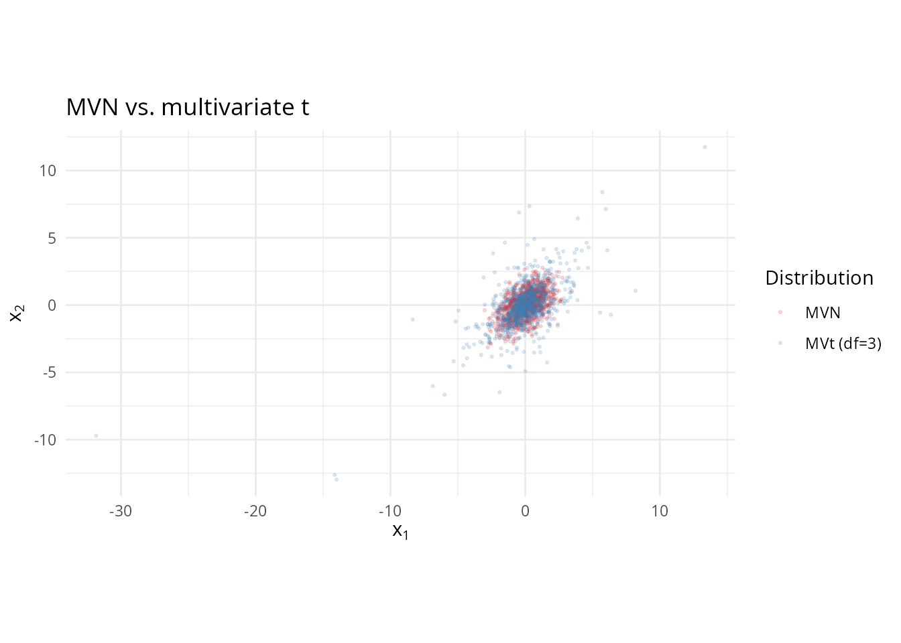
References
- Kotz S, Nadarajah S (2004). Multivariate t Distributions and their Applications. Cambridge University Press. DOI: 10.1017/CBO9780511550683
Multivariate Cauchy
The multivariate Cauchy distribution is the multivariate t with \(\nu = 1\). It has extremely heavy tails and no finite moments. Available in all four parameterizations.
\[f(x \mid \mu, S) = \frac{\Gamma\!\bigl((1+k)/2\bigr)}{\Gamma(1/2)(\pi)^{k/2}|S|^{1/2}} \left(1 + (x-\mu)^T S^{-1} (x-\mu)\right)^{-(1+k)/2}\]
| Parameter | Description | Constraint |
|---|---|---|
| \(\mu\) | Mean vector (length \(k\)) | \(\mu \in \mathbb{R}^k\) |
| \(S\) | Scale matrix (\(k \times k\)) | Positive-definite |
Parameterizations:
| Variant | Function prefix | Scale parameter |
|---|---|---|
| Covariance |
dmvc / rmvc
|
\(S\) |
| Cholesky |
dmvcc / rmvcc
|
\(U\) (Cholesky of \(S\)) |
| Precision |
dmvcp / rmvcp
|
\(\Omega\) |
| Precision-Cholesky |
dmvcpc / rmvcpc
|
\(U\) (Cholesky of \(\Omega\)) |
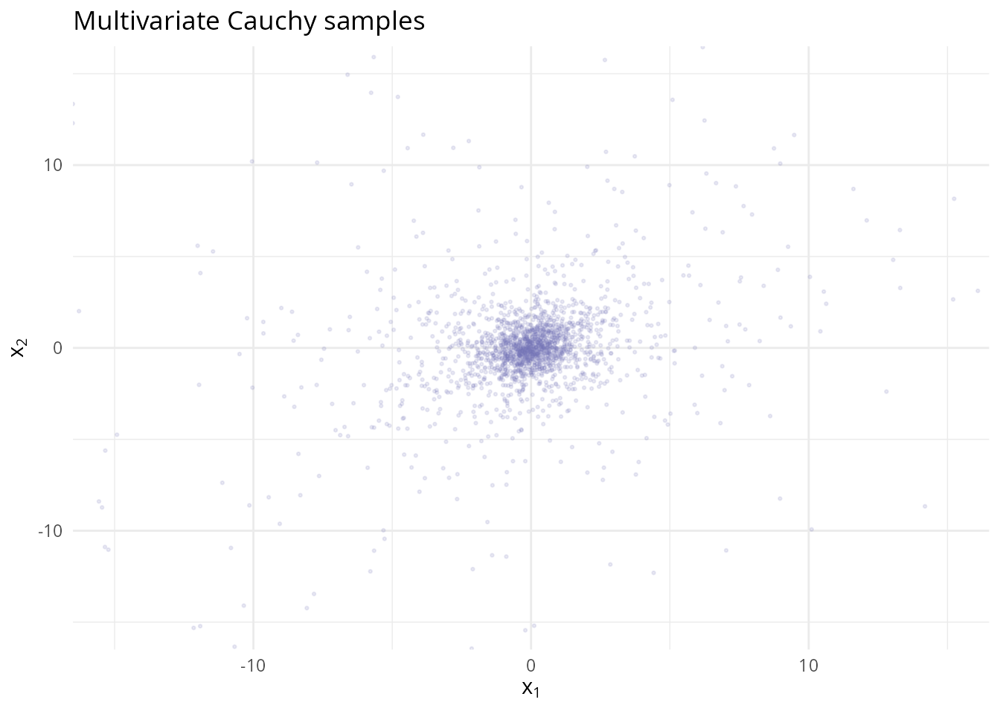
References
- Kotz S, Nadarajah S (2004). Multivariate t Distributions and their Applications. Cambridge University Press. DOI: 10.1017/CBO9780511550683
Multivariate Laplace
The symmetric multivariate Laplace distribution is defined as a scale mixture of normals with an exponential mixing distribution: \(X = \mu + \sqrt{E} Z\) where \(E \sim \text{Exp}(1)\) and \(Z \sim \mathcal{N}(0, \Sigma)\). This produces heavier tails than the MVN and induces sparsity when used as a prior.
\[f(x \mid \mu, \Sigma) = \frac{2}{(2\pi)^{k/2}|\Sigma|^{1/2}} \left(\frac{q(x)}{2}\right)^{\nu/2} K_\nu\!\left(\sqrt{2 q(x)}\right)\]
where \(q(x) = (x - \mu)^T \Sigma^{-1}(x - \mu)\), \(\nu = (2-k)/2\), and \(K_\nu\) is the modified Bessel function of the second kind.
| Parameter | Description | Constraint |
|---|---|---|
| \(\mu\) | Mean vector (length \(k\)) | \(\mu \in \mathbb{R}^k\) |
| \(\Sigma\) | Covariance matrix (\(k \times k\)) | Positive-definite |
Parameterizations:
| Variant | Function prefix | Scale parameter |
|---|---|---|
| Covariance |
dmvl / rmvl
|
\(\Sigma\) |
| Cholesky |
dmvlc / rmvlc
|
\(U\) (Cholesky of \(\Sigma\)) |
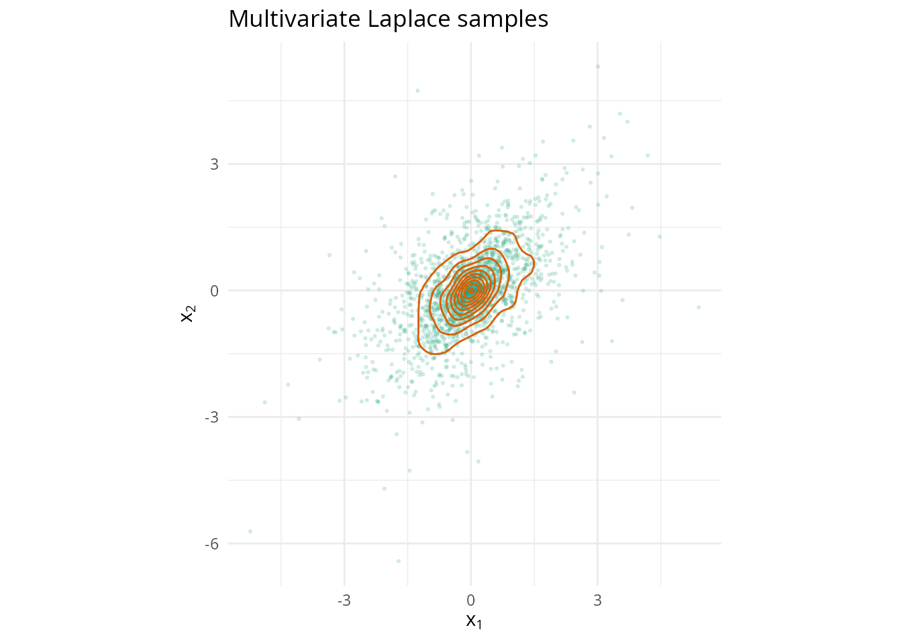
References
- Eltoft T, Kim T, Lee TW (2006). “On the Multivariate Laplace Distribution.” IEEE Signal Processing Letters, 13(5), 300-303. DOI: 10.1109/LSP.2006.870353
Asymmetric multivariate Laplace
The asymmetric multivariate Laplace distribution of Kotz, Kozubowski, and Podgorski (2003) extends the symmetric version by allowing the location/skew parameter \(\mu\) to be nonzero. The density involves a modified Bessel function of the second kind and a quadratic form. When \(\mu = 0\) it reduces to the symmetric multivariate Laplace.
\[f(x \mid \mu, \Sigma) = \frac{2}{(2\pi)^{k/2}|\Sigma|^{1/2}} \left(\frac{q(x)}{2 + \mu^T\Sigma^{-1}\mu}\right)^{\nu/2} \exp\!\left(x^T\Sigma^{-1}\mu\right) K_\nu\!\left(\sqrt{(2 + \mu^T\Sigma^{-1}\mu)\,q(x)}\right)\]
where \(q(x) = x^T\Sigma^{-1}x\) and \(\nu = (2-k)/2\).
| Parameter | Description | Constraint |
|---|---|---|
| \(\mu\) | Skewness/location vector (length \(k\)) | \(\mu \in \mathbb{R}^k\) |
| \(\Sigma\) | Covariance matrix (\(k \times k\)) | Positive-definite |
Functions: daml(x, mu, Sigma, log),
raml(n, mu, Sigma)
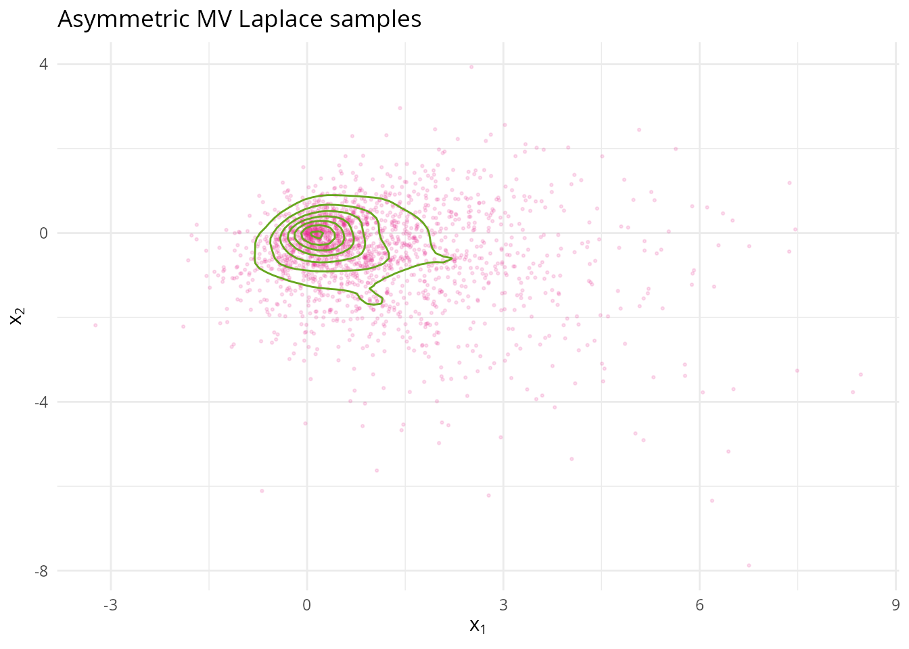
References
- Kotz S, Kozubowski TJ, Podgorski K (2003). “An Asymmetric Multivariate Laplace Distribution.” Working Paper.
- Kotz S, Kozubowski TJ, Podgorski K (2001). The Laplace Distribution and Generalizations. Birkhauser. DOI: 10.1007/978-1-4612-0173-1
Multivariate power exponential
The multivariate power exponential distribution generalizes the MVN through a kurtosis parameter \(\kappa > 0\). At \(\kappa = 1\) it is the MVN; smaller values produce heavier tails and larger values produce lighter tails (approaching uniform on an ellipsoid). Random generation uses a gamma-distributed radius scaled by a uniform point on the unit sphere.
\[f(x \mid \mu, \Sigma, \kappa) = \frac{k\,\Gamma(k/2)}{\pi^{k/2}\Gamma(1 + k/(2\kappa))2^{1+k/(2\kappa)}|\Sigma|^{1/2}} \exp\!\left(-\frac{1}{2}\bigl[(x-\mu)^T\Sigma^{-1}(x-\mu)\bigr]^\kappa\right)\]
| Parameter | Description | Constraint |
|---|---|---|
| \(\mu\) | Mean vector (length \(k\)) | \(\mu \in \mathbb{R}^k\) |
| \(\Sigma\) | Covariance matrix (\(k \times k\)) | Positive-definite |
| \(\kappa\) | Kurtosis (1 = MVN) | \(\kappa > 0\) |
Parameterizations:
| Variant | Function prefix | Scale parameter |
|---|---|---|
| Covariance |
dmvpe / rmvpe
|
\(\Sigma\), kappa
|
| Cholesky |
dmvpec / rmvpec
|
\(U\), kappa
|
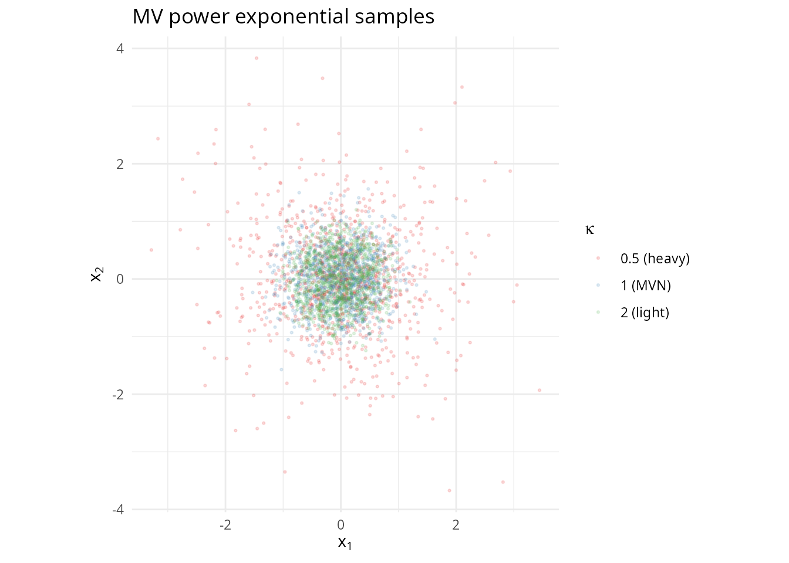
References
- Gomez E, Gomez-Villegas MA, Marin JM (1998). “A Multivariate Generalization of the Power Exponential Family of Distributions.” Communications in Statistics – Theory and Methods, 27(3), 589-600. DOI: 10.1080/03610929808832115
Multivariate Polya
The multivariate Polya (Dirichlet-multinomial) distribution is the distribution of counts drawn from a categorical distribution whose probabilities are themselves Dirichlet-distributed. It provides an overdispersed alternative to the multinomial.
\[\Pr(x \mid \alpha) = \frac{n!}{\prod_j x_j!} \frac{\Gamma(\sum_j \alpha_j)}{\Gamma(n + \sum_j \alpha_j)} \prod_{j=1}^k \frac{\Gamma(x_j + \alpha_j)}{\Gamma(\alpha_j)}\]
where \(n = \sum_j x_j\).
| Parameter | Description | Constraint |
|---|---|---|
| \(x\) | Count vector (length \(k\)) | Non-negative integers |
| \(\alpha\) | Concentration vector (length \(k\)) | \(\alpha_j > 0\) |
Functions: dmvpolya(x, alpha, log),
rmvpolya(n, alpha)
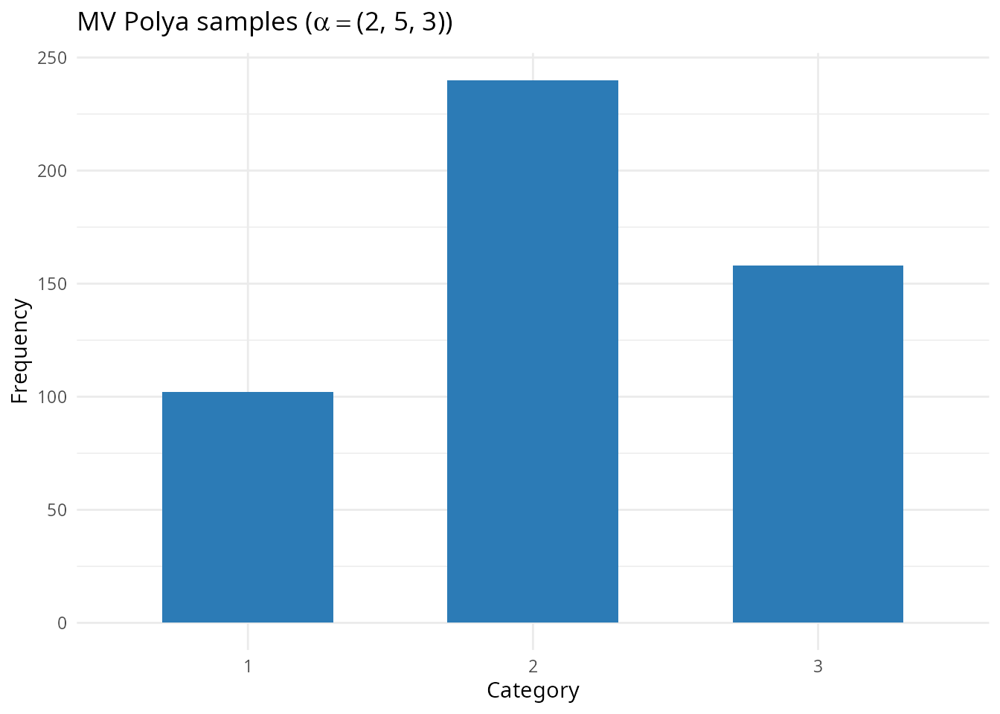
Simplex and Dirichlet
Dirichlet
The Dirichlet distribution is the multivariate generalization of the beta distribution. It is defined on the \((k-1)\)-simplex (vectors that are non-negative and sum to one) and serves as the conjugate prior for the parameters of the categorical and multinomial distributions.
\[f(x \mid \alpha) = \frac{\Gamma(\sum_j \alpha_j)}{\prod_j \Gamma(\alpha_j)} \prod_{j=1}^k x_j^{\alpha_j - 1}\]
| Parameter | Description | Constraint |
|---|---|---|
| \(\alpha\) | Concentration vector (length \(k\)) | \(\alpha_j > 0\) |
Functions: ddirichlet(x, alpha, log),
rdirichlet(n, alpha)
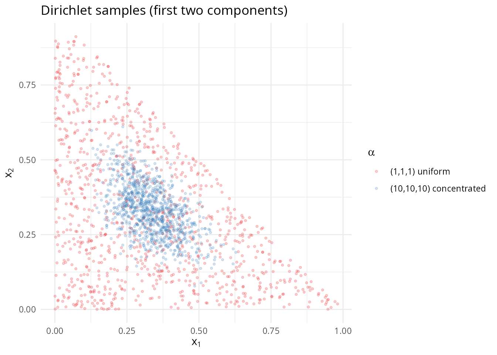
References
- Ferguson TS (1973). “A Bayesian Analysis of Some Nonparametric Problems.” The Annals of Statistics, 1(2), 209-230. DOI: 10.1214/aos/1176342360
Simplex
The simplex distribution (Barndorff-Nielsen and Jorgensen, 1991) is a two-parameter distribution on \((0, 1)\) that provides an alternative to the beta distribution for proportional data. Its density involves a deviance function \(d(y; \mu) = (y - \mu)^2 / [y(1-y)\mu^2(1-\mu)^2]\).
\[f(y \mid \mu, \sigma) = \bigl[2\pi\sigma^2 y^3 (1-y)^3\bigr]^{-1/2} \exp\!\left(-\frac{d(y; \mu)}{2\sigma^2}\right)\]
| Parameter | Description | Constraint |
|---|---|---|
| \(\mu\) | Mean | \(\mu \in (0, 1)\) |
| \(\sigma\) | Dispersion | \(\sigma > 0\) |
Functions: dsimplex(x, mu, sigma, log),
rsimplex(n, mu, sigma)
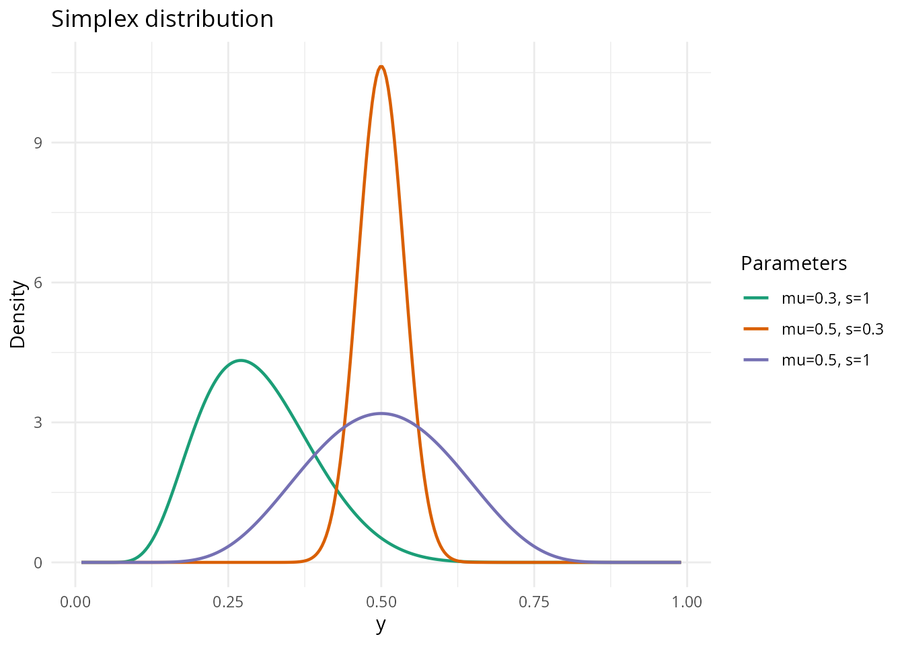
References
- Barndorff-Nielsen OE, Jorgensen B (1991). “Some Parametric Models on the Simplex.” Journal of Multivariate Analysis, 39(1), 106-116. DOI: 10.1016/0047-259X(91)90008-P
Stick-breaking
The truncated stick-breaking prior is a constructive representation of the Dirichlet process, useful for nonparametric Bayesian mixture models. The weights are constructed as \(w_m = \theta_m \prod_{j < m}(1 - \theta_j)\) where \(\theta_j \sim \text{Beta}(1, \gamma)\). The parameter \(\gamma\) controls concentration: small \(\gamma\) produces a few large weights while large \(\gamma\) spreads mass more uniformly.
\[f(\theta \mid \gamma) = \prod_{m=1}^{M-1} \gamma(1 - \theta_m)^{\gamma - 1}, \quad \theta_m \in [0, 1]\]
| Parameter | Description | Constraint |
|---|---|---|
| \(\theta\) | Stick proportions (length \(M-1\)) | \(\theta_m \in [0, 1]\) |
| \(\gamma\) | Concentration | \(\gamma > 0\) |
Functions: dStick(theta, gamma, log),
rStick(M, gamma)
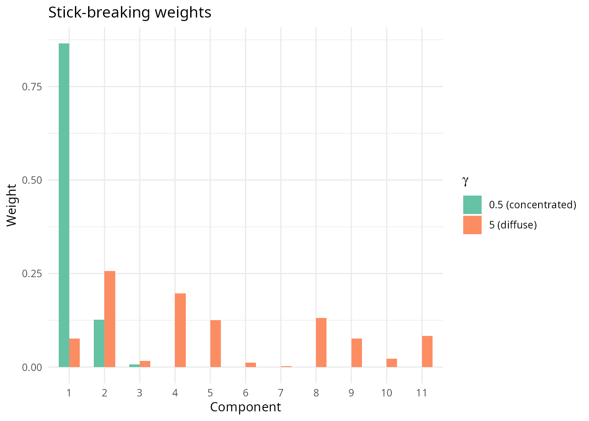
References
- Sethuraman J (1994). “A Constructive Definition of Dirichlet Priors.” Statistica Sinica, 4(2), 639-650.
- Ishwaran H, James LF (2001). “Gibbs Sampling Methods for Stick-Breaking Priors.” Journal of the American Statistical Association, 96(453), 161-173. DOI: 10.1198/016214501750332758
Matrix-valued distributions
Matrix-valued distributions are priors for covariance matrices, precision matrices, and matrix-valued parameters in multivariate models.
Wishart
The Wishart distribution is the conjugate prior for the precision matrix of a multivariate normal distribution. A \(k \times k\) random matrix \(\Omega\) follows a Wishart distribution with \(\nu \geq k\) degrees of freedom and \(k \times k\) positive-semidefinite scale matrix \(S\).
\[f(\Omega \mid \nu, S) = \frac{|\Omega|^{(\nu-k-1)/2} \exp\!\bigl(-\frac{1}{2}\text{tr}(S^{-1}\Omega)\bigr)}{2^{\nu k/2} |S|^{\nu/2} \Gamma_k(\nu/2)}\]
where \(\Gamma_k\) is the multivariate gamma function.
| Parameter | Description | Constraint |
|---|---|---|
| \(\nu\) | Degrees of freedom | \(\nu \geq k\) |
| \(S\) | Scale matrix (\(k \times k\)) | Positive-definite |
Parameterizations:
| Variant | Function prefix | Input |
|---|---|---|
| Matrix |
dwishart / rwishart
|
\(\Omega\) (precision matrix) |
| Cholesky |
dwishartc / rwishartc
|
\(U\) (upper Cholesky of \(\Omega\)) |
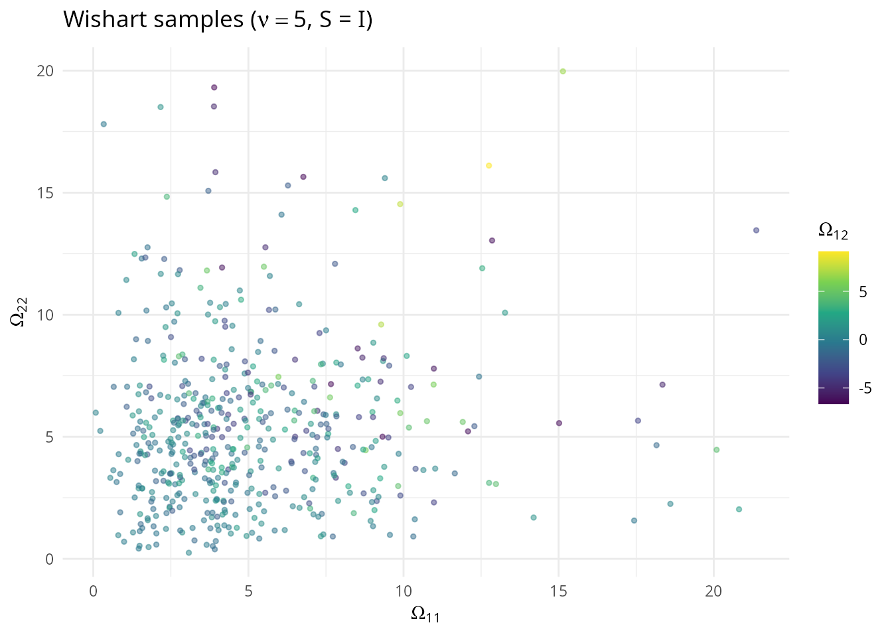
References
- Wishart J (1928). “The Generalised Product Moment Distribution in Samples from a Normal Multivariate Population.” Biometrika, 20A(1-2), 32-52. DOI: 10.2307/2331939
Inverse Wishart
The inverse Wishart distribution is the conjugate prior for the covariance matrix of a multivariate normal distribution. If \(\Omega \sim \text{Wishart}(\nu, S^{-1})\), then \(\Sigma = \Omega^{-1} \sim \text{Inv-Wishart}(\nu, S)\).
\[f(\Sigma \mid \nu, S) = \frac{|S|^{\nu/2}}{2^{\nu k/2}\Gamma_k(\nu/2)} |\Sigma|^{-(\nu+k+1)/2} \exp\!\left(-\frac{1}{2}\text{tr}(S\Sigma^{-1})\right)\]
| Parameter | Description | Constraint |
|---|---|---|
| \(\nu\) | Degrees of freedom | \(\nu \geq k\) |
| \(S\) | Scale matrix (\(k \times k\)) | Positive-definite |
Parameterizations:
| Variant | Function prefix | Input |
|---|---|---|
| Matrix |
dinvwishart / rinvwishart
|
\(\Sigma\) (covariance matrix) |
| Cholesky |
dinvwishartc / rinvwishartc
|
\(U\) (upper Cholesky of \(\Sigma\)) |
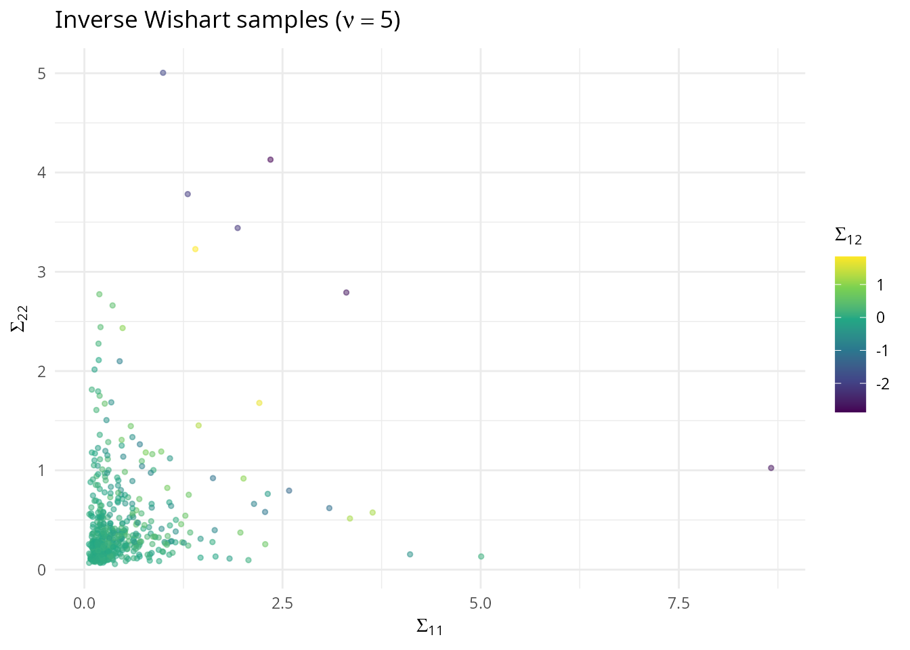
Scaled inverse Wishart
The scaled inverse Wishart distribution separates the standard deviations from the correlation structure of a covariance matrix, addressing the well-known coupling between variance and correlation in the standard inverse Wishart prior. The covariance matrix is decomposed as \(Q = \text{diag}(\zeta) \cdot \Sigma_0 \cdot \text{diag}(\zeta)\) where \(\Sigma_0 \sim \text{Inv-Wishart}(\nu, S)\) and \(\log(\zeta) \sim \mathcal{N}(\mu, \text{diag}(\delta))\).
\[f(Q \mid \nu, S, \zeta, \mu, \delta) = f_{\text{IW}}(\Sigma_0 \mid \nu, S) \cdot \prod_j f_{\text{LN}}(\zeta_j \mid \mu_j, \delta_j)\]
| Parameter | Description | Constraint |
|---|---|---|
| \(\nu\) | Degrees of freedom | \(\nu \geq k\) |
| \(S\) | Base scale matrix (\(k \times k\)) | Positive-definite |
| \(\zeta\) | Scale factors (length \(k\)) | \(\zeta_j > 0\) |
| \(\mu\) | Log-scale mean (length \(k\)) | \(\mu \in \mathbb{R}^k\) |
| \(\delta\) | Log-scale variance (length \(k\)) | \(\delta_j > 0\) |
Functions:
dsiw(Q, nu, S, zeta, mu, delta, log),
rsiw(nu, S, mu, delta)
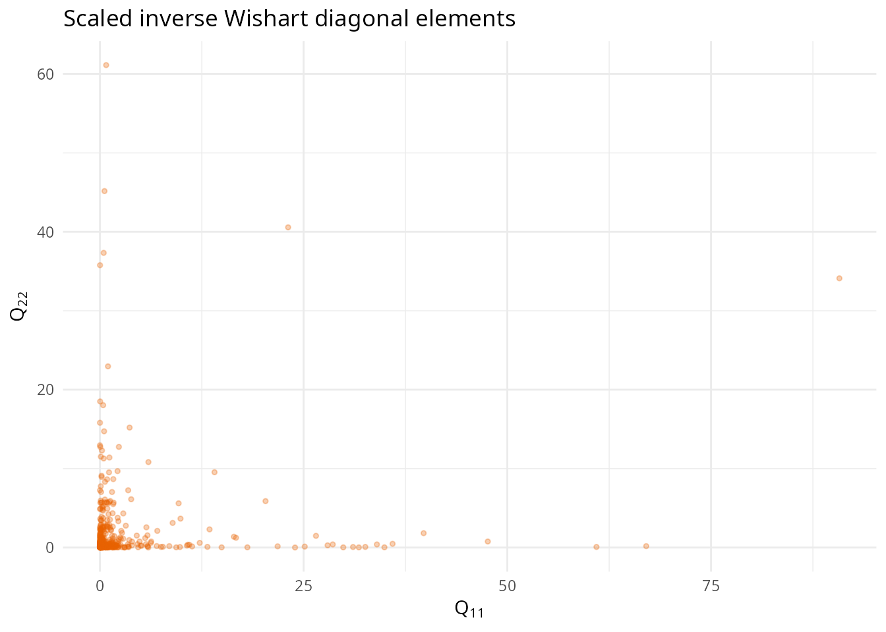
References
- O’Malley AJ, Zaslavsky AM (2008). “Domain-Level Covariance Analysis for Multilevel Survey Data with Structured Nonresponse.” Journal of the American Statistical Association, 103(484), 1405-1418. DOI: 10.1198/016214508000000724
Matrix normal
The matrix normal distribution generalizes the multivariate normal to matrix-valued random variables. An \(n \times k\) random matrix \(X\) follows a matrix normal distribution with mean matrix \(M\), among-row covariance \(U\) (\(n \times n\)), and among-column covariance \(V\) (\(k \times k\)), written \(X \sim \mathcal{MN}(M, U, V)\). It is equivalent to \(\text{vec}(X) \sim \mathcal{N}(\text{vec}(M), V \otimes U)\).
\[f(X \mid M, U, V) = \frac{\exp\!\left(-\frac{1}{2}\text{tr}\bigl[V^{-1}(X-M)^T U^{-1}(X-M)\bigr]\right)}{(2\pi)^{nk/2}|U|^{k/2}|V|^{n/2}}\]
| Parameter | Description | Constraint |
|---|---|---|
| \(M\) | Mean matrix (\(n \times k\)) | \(M \in \mathbb{R}^{n \times k}\) |
| \(U\) | Row covariance (\(n \times n\)) | Positive-definite |
| \(V\) | Column covariance (\(k \times k\)) | Positive-definite |
Functions:
dmatrixnorm(X, M, U, V, log),
rmatrixnorm(M, U, V)
#> [1] -10.75608Matrix gamma
The matrix gamma distribution generalizes the gamma distribution to positive-definite matrices. It is related to the Wishart: \(\text{Matrix-Gamma}(\alpha, \beta, \Sigma) = \text{Wishart}(2\alpha, \beta\Sigma/2)\).
\[f(X \mid \alpha, \beta, \Sigma) = \frac{|X|^{\alpha-(k+1)/2} \exp\!\bigl(-\text{tr}(\beta\Sigma^{-1}X)\bigr)}{\beta^{-k\alpha}|\Sigma|^{\alpha}\Gamma_k(\alpha)}\]
| Parameter | Description | Constraint |
|---|---|---|
| \(\alpha\) | Shape | \(\alpha > (k-1)/2\) |
| \(\beta\) | Scale | \(\beta > 0\) |
| \(\Sigma\) | Scale matrix (\(k \times k\)) | Positive-definite |
Functions:
dmatrixgamma(X, alpha, beta, Sigma, log),
rmatrixgamma(alpha, beta, Sigma)
#> [1] -6.496551Inverse matrix gamma
The inverse matrix gamma distribution is the distribution of \(X^{-1}\) when \(X\) follows a matrix gamma distribution. Equivalently, \(\text{Inv-Matrix-Gamma}(\alpha, \beta, \Psi) = \text{Inv-Wishart}(2\alpha, 2\Psi/\beta)\).
\[f(X \mid \alpha, \beta, \Psi) = \frac{|\Psi|^{\alpha}\beta^{k\alpha}}{\Gamma_k(\alpha)} |X|^{-\alpha-(k+1)/2} \exp\!\left(-\beta\,\text{tr}(\Psi X^{-1})\right)\]
| Parameter | Description | Constraint |
|---|---|---|
| \(\alpha\) | Shape | \(\alpha > (k-1)/2\) |
| \(\beta\) | Scale | \(\beta > 0\) |
| \(\Psi\) | Scale matrix (\(k \times k\)) | Positive-definite |
Functions:
dinvmatrixgamma(X, alpha, beta, Psi, log),
rinvmatrixgamma(alpha, beta, Psi)
#> [1] -1.640184Matrix-t
The matrix-variate t distribution generalizes the multivariate t to matrix-valued random variables. It arises as a scale mixture of matrix normals with an inverse Wishart mixing distribution and is used for robust covariance estimation.
\[f(X) \propto |\Omega|^{-n/2} |\Sigma|^{-p/2} \left|I_n + \frac{1}{\nu}\Omega^{-1}(X - M)\Sigma^{-1}(X - M)^T\right|^{-(\nu + n + p - 1)/2}\]
| Parameter | Description | Constraint |
|---|---|---|
| \(X\) | Data matrix (\(n \times p\)) | \(X \in \mathbb{R}^{n \times p}\) |
| \(M\) | Location matrix (\(n \times p\)) | \(M \in \mathbb{R}^{n \times p}\) |
| \(\Omega\) | Row scale matrix (\(n \times n\)) | Positive-definite |
| \(\Sigma\) | Column scale matrix (\(p \times p\)) | Positive-definite |
| \(\nu\) | Degrees of freedom | \(\nu > 0\) |
Functions:
dmatrixt(X, M, Omega, Sigma, nu, log)
#> [1] -4.796025Conjugate and structured priors
These distributions combine simpler components into structured priors for Bayesian hierarchical models.
Normal-inverse-Wishart
The normal-inverse-Wishart (NIW) distribution is the conjugate prior for the mean and covariance of a multivariate normal likelihood. It factors as \(p(\mu, \Sigma) = p(\Sigma \mid \nu, S) \cdot p(\mu \mid \mu_0, \Sigma/\lambda)\), where \(\Sigma \sim \text{Inv-Wishart}(\nu, S)\) and \(\mu \mid \Sigma \sim \mathcal{N}(\mu_0, \Sigma/\lambda)\).
\[f(\mu, \Sigma \mid \mu_0, \lambda, S, \nu) = \frac{|S|^{\nu/2}\lambda^{k/2}}{2^{\nu k/2}\pi^{k/2}\Gamma_k(\nu/2)} |\Sigma|^{-(\nu+k+2)/2} \exp\!\left(-\frac{1}{2}\text{tr}(S\Sigma^{-1}) - \frac{\lambda}{2}(\mu-\mu_0)^T\Sigma^{-1}(\mu-\mu_0)\right)\]
| Parameter | Description | Constraint |
|---|---|---|
| \(\mu_0\) | Prior mean (length \(k\)) | \(\mu_0 \in \mathbb{R}^k\) |
| \(\lambda\) | Scaling factor | \(\lambda > 0\) |
| \(S\) | Scale matrix (\(k \times k\)) | Positive-definite |
| \(\nu\) | Degrees of freedom | \(\nu \geq k\) |
Functions:
dnorminvwishart(mu, mu0, lambda, Sigma, S, nu, log),
rnorminvwishart(n, mu0, lambda, S, nu)
#> [1] -7.119219Normal-Wishart
The normal-Wishart distribution is the conjugate prior for the mean and precision of a multivariate normal likelihood. It factors as \(p(\mu, \Omega) = p(\Omega \mid \nu, S) \cdot p(\mu \mid \mu_0, (\lambda\Omega)^{-1})\), where \(\Omega \sim \text{Wishart}(\nu, S)\) and \(\mu \mid \Omega \sim \mathcal{N}(\mu_0, (\lambda\Omega)^{-1})\).
\[f(\mu, \Omega \mid \mu_0, \lambda, S, \nu) = \frac{|\Omega|^{(\nu-k)/2}\lambda^{k/2}}{2^{\nu k/2}\pi^{k/2}|S|^{\nu/2}\Gamma_k(\nu/2)} \exp\!\left(-\frac{1}{2}\text{tr}(S^{-1}\Omega) - \frac{\lambda}{2}(\mu-\mu_0)^T\Omega(\mu-\mu_0)\right)\]
| Parameter | Description | Constraint |
|---|---|---|
| \(\mu_0\) | Prior mean (length \(k\)) | \(\mu_0 \in \mathbb{R}^k\) |
| \(\lambda\) | Scaling factor | \(\lambda > 0\) |
| \(S\) | Scale matrix (\(k \times k\)) | Positive-definite |
| \(\nu\) | Degrees of freedom | \(\nu \geq k\) |
Functions:
dnormwishart(mu, mu0, lambda, Omega, S, nu, log),
rnormwishart(n, mu0, lambda, S, nu)
#> [1] -7.502599Zellner’s g-prior
Zellner’s g-prior (Zellner, 1986) is a data-dependent prior for regression coefficients \(\beta\) in a linear model. It places \(\beta \sim \mathcal{N}(0, g\sigma^2 (X^T X)^{-1})\), automatically scaling with the design matrix. The hyperparameter \(g\) controls shrinkage toward zero; larger \(g\) implies a less informative prior.
\[f(\beta \mid g, \sigma^2, X) = (2\pi g\sigma^2)^{-p/2} |X^TX|^{1/2} \exp\!\left(-\frac{\beta^T X^TX \beta}{2g\sigma^2}\right)\]
The function dhyperg provides the density for the
hyper-\(g\) prior on \(g\), following Liang et al. (2008): \(f(g) \propto (1+g)^{-\alpha/2}\).
| Parameter | Description | Constraint |
|---|---|---|
| \(\beta\) | Regression coefficients (length \(p\)) | \(\beta \in \mathbb{R}^p\) |
| \(g\) | Prior scale | \(g > 0\) |
| \(\sigma\) | Residual standard deviation | \(\sigma > 0\) |
| \(X\) | Design matrix (\(n \times p\)) | Full column rank |
Functions: dhyperg(g, alpha, log),
dzellner(beta, g, sigma, X, log),
rzellner(n, g, sigma, X)
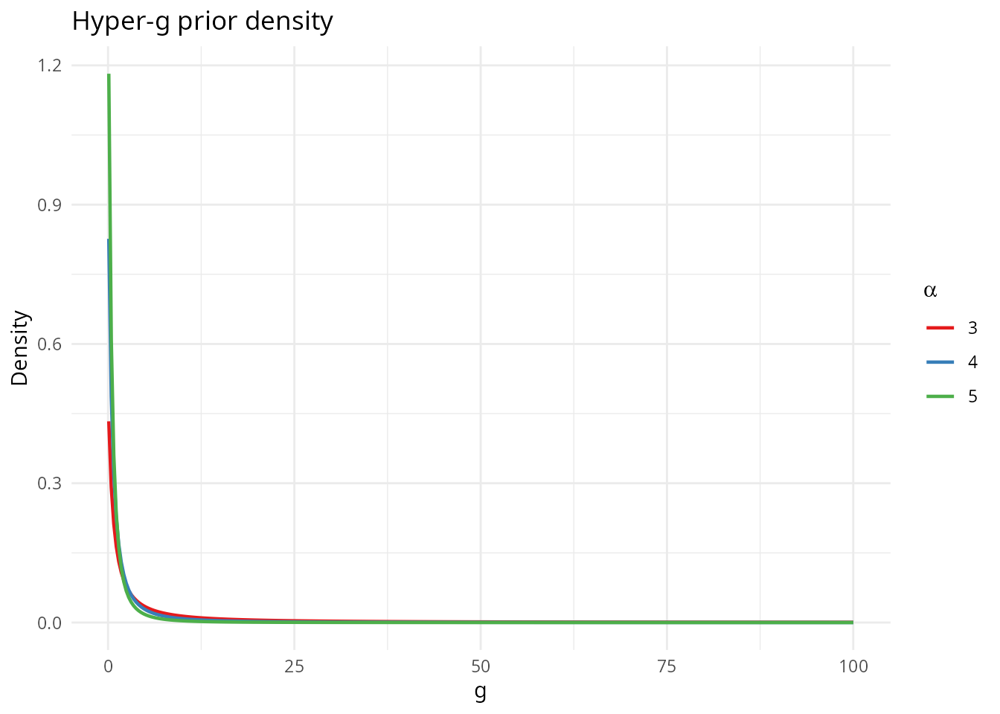
References
- Zellner A (1986). “On Assessing Prior Distributions and Bayesian Regression Analysis with g-Prior Distributions.” In PK Goel, A Zellner (eds.), Bayesian Inference and Decision Techniques, 233-243. Elsevier.
- Liang F, Paulo R, Molina G, Clyde MA, Berger JO (2008). “Mixtures of g Priors for Bayesian Variable Selection.” Journal of the American Statistical Association, 103(481), 410-423. DOI: 10.1198/016214507000001337
Huang-Wand
The Huang-Wand prior (Huang and Wand, 2013) is a flexible prior for covariance matrices in hierarchical models. It decomposes the inverse Wishart into a product of independent inverse-gamma priors on auxiliary scale parameters, avoiding the restrictive marginal structure of the standard inverse Wishart. Available in both matrix and Cholesky parameterizations.
\[f(\Sigma \mid \nu, a) \propto |\Sigma|^{-(\nu+k+1)/2} \exp\!\left(-\frac{1}{2}\text{tr}\bigl(\text{diag}(1/a_1, \ldots, 1/a_k)\,\Sigma^{-1}\bigr)\right) \prod_j a_j^{-1} \exp\!\left(-\frac{1}{A_j^2 a_j}\right)\]
| Parameter | Description | Constraint |
|---|---|---|
| \(\nu\) | Degrees of freedom | \(\nu \geq 2\) (default 2) |
| \(a\) | Auxiliary scale parameters (length \(k\)) | \(a_j > 0\) |
| \(A\) | Scale hyperparameters (length \(k\)) | \(A_j > 0\) |
Functions:
dhuangwand(x, nu, a, A, log),
rhuangwand(nu, a, A),
dhuangwandc(x, nu, a, A, log),
rhuangwandc(nu, a, A)
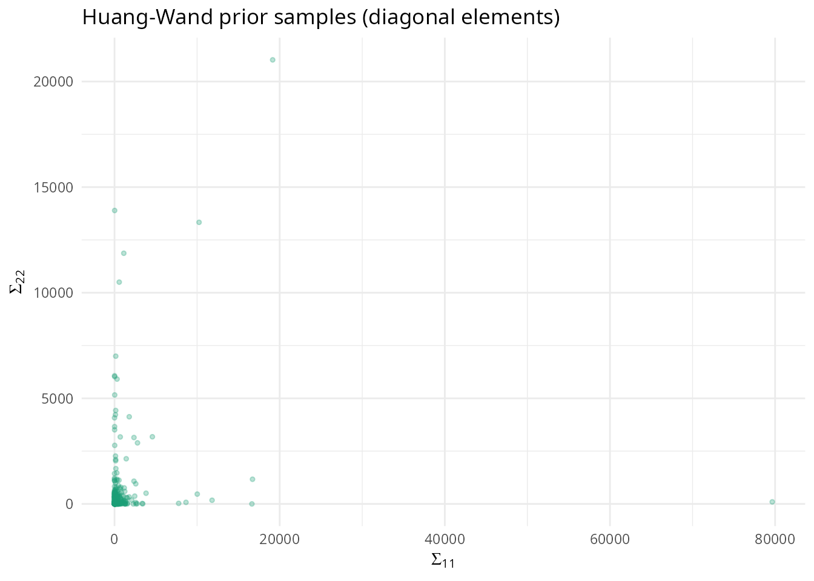
References
- Huang A, Wand MP (2013). “Simple Marginally Noninformative Prior Distributions for Covariance Matrices.” Bayesian Analysis, 8(2), 439-452. DOI: 10.1214/13-BA815
Yang-Berger
The Yang-Berger prior (Yang and Berger, 1994) is a reference (objective) prior for a covariance matrix, derived from the reference prior methodology of Berger and Bernardo. It is an improper prior that is invariant under permutation of the matrix indices. Available in both matrix and Cholesky parameterizations.
\[f(\Sigma) \propto |\Sigma|^{-(k+1)/2} \prod_{i < j} \frac{1}{l_i - l_j} \prod_i \left(\sum_{j \neq i} \frac{1}{l_i - l_j}\right)^{-1/2}\]
where \(l_1 > \cdots > l_k\) are the eigenvalues of \(\Sigma\).
| Parameter | Description | Constraint |
|---|---|---|
| \(\Sigma\) | Covariance matrix (\(k \times k\)) | Positive-definite |
Functions: dyangberger(x, log),
dyangbergerc(x, log)
#> [1] -0.7914162References
- Yang R, Berger JO (1994). “Estimation of a Covariance Matrix Using the Reference Prior.” The Annals of Statistics, 22(3), 1195-1211. DOI: 10.1214/aos/1176325625
Shrinkage priors
Shrinkage priors induce sparsity in regression coefficients by placing heavy mass near zero while maintaining heavy tails to accommodate large signals.
Horseshoe
The horseshoe prior (Carvalho, Polson, and Scott, 2010) is a global-local shrinkage prior for sparse signal recovery. Each coefficient \(\beta_j\) is assigned a normal prior with variance \(\lambda_j^2 \tau^2\), where \(\lambda_j\) is a local shrinkage parameter and \(\tau\) is a global shrinkage parameter. The resulting marginal prior has a sharp peak at zero and Cauchy-like tails.
\[\beta_j \mid \lambda_j, \tau \sim \mathcal{N}(0, \lambda_j^2 \tau^2), \quad \lambda_j \sim C^+(0,1), \quad \tau \sim C^+(0, \tau_0)\]
The local parameters \(\lambda_j\) are typically given half-Cauchy priors, and \(\tau\) is assigned a half-Cauchy prior whose scale encodes the expected sparsity level.
| Parameter | Description | Constraint |
|---|---|---|
| \(x\) | Coefficient values | \(x \in \mathbb{R}\) |
| \(\lambda\) | Local shrinkage (length \(p\)) | \(\lambda_j > 0\) |
| \(\tau\) | Global shrinkage (scalar) | \(\tau > 0\) |
Functions: dhs(x, lambda, tau, log),
rhs(n, lambda, tau)
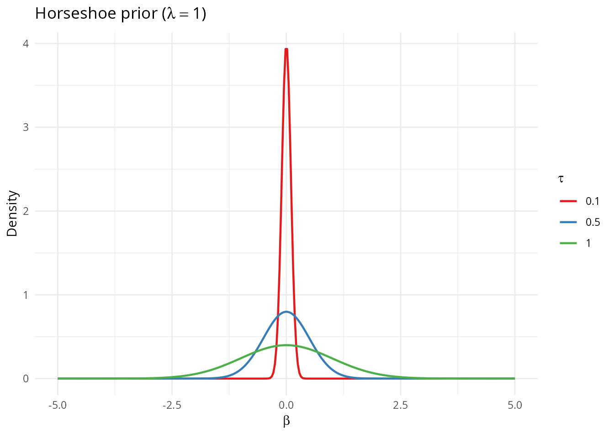
References
- Carvalho CM, Polson NG, Scott JG (2010). “The Horseshoe Estimator for Sparse Signals.” Biometrika, 97(2), 465-480. DOI: 10.1093/biomet/asq017
LASSO
The Bayesian LASSO prior (Park and Casella, 2008) places a Laplace (double-exponential) prior on regression coefficients, which is equivalent to an \(L_1\) penalty. The implementation uses the scale-mixture-of-normals representation: \(\beta_j \mid \sigma, \tau_j \sim \mathcal{N}(0, \sigma^2 \tau_j^2)\) with \(\tau_j^2 \sim \text{Exp}(\lambda^2/2)\) and \(\lambda^2 \sim \text{Gamma}(a, b)\).
\[f(\beta_j \mid \lambda) = \frac{\lambda}{2} \exp\!\left(-\lambda |\beta_j|\right)\]
in the marginal (integrated) form.
| Parameter | Description | Constraint |
|---|---|---|
| \(x\) | Coefficient values | \(x \in \mathbb{R}\) |
| \(\sigma\) | Residual standard deviation | \(\sigma > 0\) |
| \(\tau\) | Local scale parameters | \(\tau_j > 0\) |
| \(\lambda\) | Global penalty | \(\lambda > 0\) |
| \(a, b\) | Hyperparameters for \(\lambda^2\) | \(a, b > 0\) |
Functions:
dlasso(x, sigma, tau, lambda, a, b, log),
rlasso(n, sigma, tau, lambda, a, b)
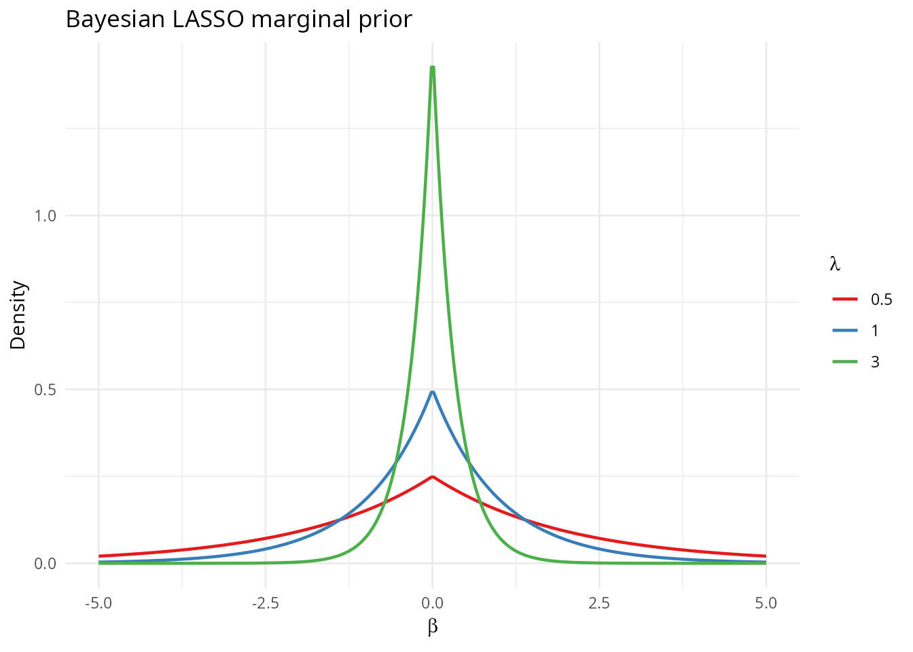
References
- Park T, Casella G (2008). “The Bayesian Lasso.” Journal of the American Statistical Association, 103(482), 681-686. DOI: 10.1080/01621459.2008.10469408
Circular, stable, and compound distributions
Von Mises
The von Mises distribution is the circular analogue of the normal distribution, defined on the circle \([-\pi, \pi)\). When \(\kappa = 0\) the distribution is uniform on the circle; as \(\kappa \to \infty\) it concentrates at \(\mu\). Random generation uses the Best-Fisher algorithm.
\[f(x \mid \mu, \kappa) = \frac{\exp\!\bigl(\kappa \cos(x - \mu)\bigr)}{2\pi I_0(\kappa)}\]
where \(I_0(\kappa)\) is the modified Bessel function of the first kind and order zero.
| Parameter | Description | Constraint |
|---|---|---|
| \(\mu\) | Mean direction (radians) | \(\mu \in [-\pi, \pi)\) |
| \(\kappa\) | Concentration | \(\kappa \geq 0\) |
Functions:
dvonmises(x, mu, kappa, log),
pvonmises(q, mu, kappa),
rvonmises(n, mu, kappa)
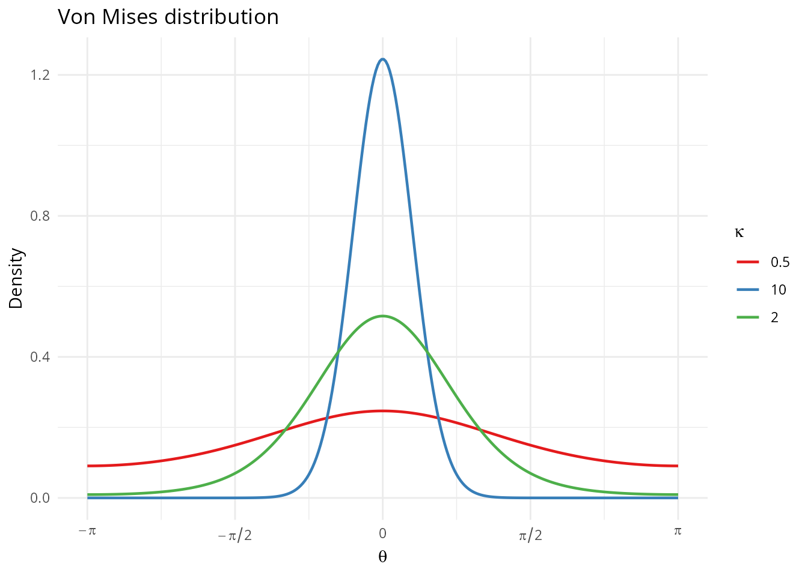
References
- Mardia KV, Jupp PE (2000). Directional Statistics. John Wiley & Sons. ISBN: 978-0-471-95333-3.
- Best DJ, Fisher NI (1979). “Efficient Simulation of the von Mises Distribution.” Journal of the Royal Statistical Society C, 28(2), 152-157. DOI: 10.2307/2346732
Stable
The stable distribution is a four-parameter family that generalizes the Gaussian, encompassing heavy-tailed and skewed distributions. Special cases include the Gaussian (\(\alpha = 2\)), Cauchy (\(\alpha = 1, \beta = 0\)), and Levy (\(\alpha = 0.5, \beta = 1\)) distributions. The density has no closed form for general \(\alpha\) and is computed via numerical integration of the characteristic function using Nolan’s 0-parameterization. Random generation uses the Chambers-Mallows-Stuck algorithm.
The characteristic function is
\[\varphi(t) = \exp\!\left(-\gamma^\alpha |t|^\alpha \left[1 - i\beta\,\text{sign}(t)\tan\!\left(\frac{\pi\alpha}{2}\right)\right] + i\delta t\right)\]
for \(\alpha \neq 1\).
| Parameter | Description | Constraint |
|---|---|---|
| \(\alpha\) | Stability index | \(\alpha \in (0, 2]\) |
| \(\beta\) | Skewness | \(\beta \in [-1, 1]\) |
| \(\gamma\) | Scale | \(\gamma > 0\) |
| \(\delta\) | Location | \(\delta \in \mathbb{R}\) |
Functions:
dstable(x, alpha, beta, gamma, delta, log),
rstable(n, alpha, beta, gamma, delta)
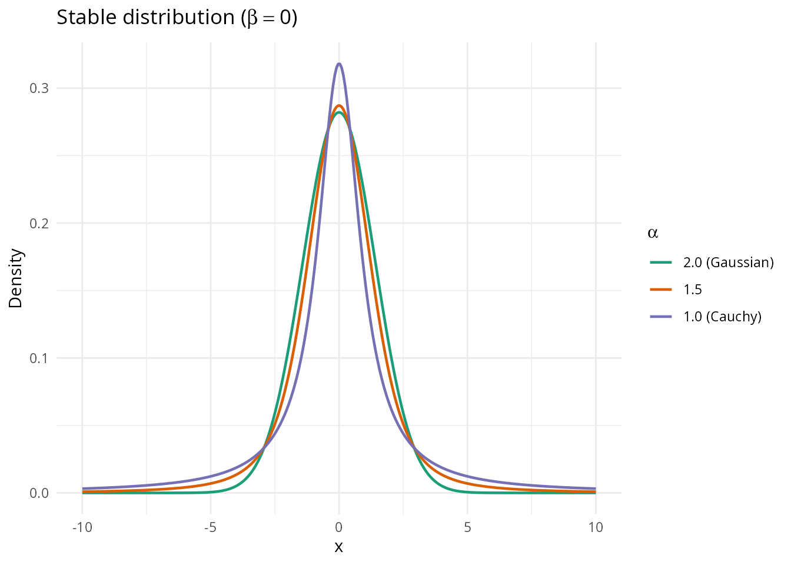
References
- Nolan JP (2020). Stable Distributions: Models for Heavy-Tailed Data. Birkhauser. DOI: 10.1007/978-3-030-52915-7
- Chambers JM, Mallows CL, Stuck BW (1976). “A Method for Simulating Stable Random Variables.” Journal of the American Statistical Association, 71(354), 340-344. DOI: 10.1080/01621459.1976.10480344
Tweedie
The Tweedie distribution is a compound Poisson-gamma distribution that belongs to the exponential dispersion family. For power parameter \(p \in (1, 2)\), it models data that are a mixture of exact zeros and positive continuous values, making it useful for insurance claims, rainfall, and ecological count-abundance data. The density involves an infinite series and is computed via the saddlepoint approximation of Dunn and Smyth (2005).
\[f(y \mid \mu, \phi, p) = a(y, \phi, p) \exp\!\left(\frac{y\theta - \kappa(\theta)}{\phi}\right)\]
where \(\theta = \mu^{1-p}/(1-p)\), \(\kappa(\theta) = \mu^{2-p}/(2-p)\), and \(a(y, \phi, p)\) is a normalizing function computed by series evaluation.
| Parameter | Description | Constraint |
|---|---|---|
| \(\mu\) | Mean | \(\mu > 0\) |
| \(\phi\) | Dispersion | \(\phi > 0\) |
| \(p\) | Power parameter | \(p \in (1, 2)\) |
Functions:
dtweedie(x, mu, phi, power, log),
rtweedie(n, mu, phi, power)
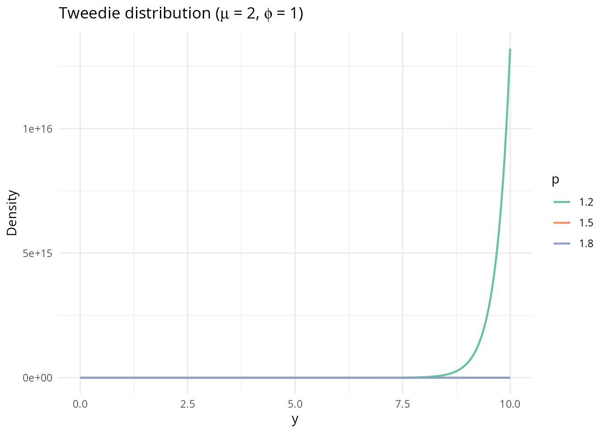
References
- Jorgensen B (1997). The Theory of Dispersion Models. Chapman and Hall. ISBN: 978-0-412-99711-4.
- Dunn PK, Smyth GK (2005). “Series Evaluation of Tweedie Exponential Dispersion Model Densities.” Statistics and Computing, 15(4), 267-280. DOI: 10.1007/s11222-005-4070-y
Copulas
Copulas separate the marginal distributions from the dependence structure of multivariate random variables. The three bivariate Archimedean copulas implemented here are parameterized by a single dependence parameter \(\theta\) and provide density evaluation and random generation.
Clayton
The Clayton copula captures lower tail dependence (concordance in extreme low values).
\[C(u, v) = \bigl(u^{-\theta} + v^{-\theta} - 1\bigr)^{-1/\theta}, \quad \theta > 0\]
The density is
\[c(u, v) = (1+\theta)(uv)^{-\theta-1}\bigl(u^{-\theta}+v^{-\theta}-1\bigr)^{-2-1/\theta}\]
As \(\theta \to 0\) the copula approaches independence; as \(\theta \to \infty\) it approaches comonotonicity (perfect positive dependence). Random generation uses conditional inversion.
| Parameter | Description | Constraint |
|---|---|---|
| \(\theta\) | Dependence parameter | \(\theta > 0\) |
Functions: dclayton(u, v, theta, log),
rclayton(n, theta)
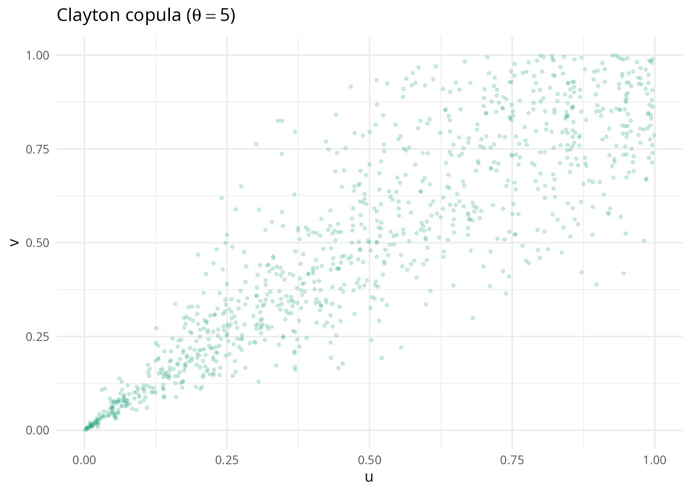
References
- Nelsen RB (2006). An Introduction to Copulas, 2nd ed. Springer. DOI: 10.1007/0-387-28678-0
Gumbel
The Gumbel copula captures upper tail dependence (concordance in extreme high values).
\[C(u, v) = \exp\!\left(-\bigl((-\log u)^\theta + (-\log v)^\theta\bigr)^{1/\theta}\right), \quad \theta \geq 1\]
At \(\theta = 1\) the copula is the independence copula. Random generation uses the Marshall-Olkin stable variate method.
| Parameter | Description | Constraint |
|---|---|---|
| \(\theta\) | Dependence parameter | \(\theta \geq 1\) |
Functions:
dgumbel.copula(u, v, theta, log),
rgumbel.copula(n, theta)
References
- Nelsen RB (2006). An Introduction to Copulas, 2nd ed. Springer. DOI: 10.1007/0-387-28678-0
Frank
The Frank copula is symmetric (no tail dependence in either direction) and captures both positive and negative dependence.
\[C(u, v) = -\frac{1}{\theta}\log\!\left(1 + \frac{(e^{-\theta u} - 1)(e^{-\theta v} - 1)}{e^{-\theta} - 1}\right)\]
The parameter \(\theta\) can be any real number except zero; \(\theta > 0\) gives positive dependence and \(\theta < 0\) gives negative dependence. Random generation uses conditional inversion.
| Parameter | Description | Constraint |
|---|---|---|
| \(\theta\) | Dependence parameter | \(\theta \neq 0\) |
Functions: dfrank(u, v, theta, log),
rfrank(n, theta)
References
- Nelsen RB (2006). An Introduction to Copulas, 2nd ed. Springer. DOI: 10.1007/0-387-28678-0
- Joe H (2015). Dependence Modeling with Copulas. Chapman and Hall/CRC. ISBN: 978-1-4665-8322-1.
Spatial priors and correlation functions
Intrinsic CAR
The intrinsic conditional autoregressive (CAR) prior is a pairwise-difference prior for spatially structured random effects on an irregular lattice. Given an adjacency matrix \(W\), the precision matrix is \(Q = \tau(D - W)\) where \(D = \text{diag}(W\mathbf{1})\) is the degree matrix. This prior is improper (rank-deficient by one for a connected graph) and the density is computed using the pseudo-determinant. A sum-to-zero constraint on \(x\) is conventionally imposed for identifiability.
\[f(x \mid W, \tau) \propto \tau^{(n-1)/2} \exp\!\left(-\frac{\tau}{2} \sum_{i \sim j} (x_i - x_j)^2\right)\]
where the sum runs over all pairs \((i, j)\) with \(W_{ij} = 1\).
| Parameter | Description | Constraint |
|---|---|---|
| \(x\) | Spatial random effects (length \(n\)) | \(x \in \mathbb{R}^n\) |
| \(W\) | Binary adjacency matrix (\(n \times n\)) | Symmetric |
| \(\tau\) | Precision | \(\tau > 0\) |
Functions:
dcar(x, W, tau, zero.mean, log),
rcar(W, tau)
References
- Besag J, York J, Mollie A (1991). “Bayesian Image Restoration, with Two Applications in Spatial Statistics (with Discussion).” Annals of the Institute of Statistical Mathematics, 43(1), 1-59. DOI: 10.1007/BF00116466
Matern
The Matern correlation function is the standard isotropic correlation model in spatial statistics and Gaussian process regression. At \(\nu = 0.5\) this gives exponential correlation; at \(\nu = 1.5\) the Matern 3/2 model; and as \(\nu \to \infty\) the squared exponential (Gaussian) correlation.
\[C(h; \nu, \rho) = \frac{2^{1-\nu}}{\Gamma(\nu)} \left(\frac{\sqrt{2\nu}\,h}{\rho}\right)^\nu K_\nu\!\left(\frac{\sqrt{2\nu}\,h}{\rho}\right)\]
where \(K_\nu\) is the modified Bessel function of the second kind.
| Parameter | Description | Constraint |
|---|---|---|
| \(h\) | Distance | \(h \geq 0\) |
| \(\nu\) | Smoothness | \(\nu > 0\) |
| \(\rho\) | Range (length-scale) | \(\rho > 0\) |
Functions: matern.corr(h, nu, rho)
(correlation vector), matern.cov(dist.mat, sigma2, nu, rho)
(\(n \times n\) covariance matrix)
References
- Stein ML (1999). Interpolation of Spatial Data: Some Theory for Kriging. Springer. DOI: 10.1007/978-1-4612-1494-6
- Rasmussen CE, Williams CKI (2006). Gaussian Processes for Machine Learning. MIT Press. ISBN: 978-0-262-18253-9. Available online
Utility: truncated distributions and continuous relaxation
Truncated
The truncated distribution family provides a generic mechanism for
truncating any base distribution to the interval \([a, b]\). Given a base distribution
specified by its name (e.g., "norm", "st",
"laplace"), the truncated density is
\[f_{\text{trunc}}(x \mid a, b) = \frac{f(x)}{F(b) - F(a)}, \quad x \in [a, b]\]
where \(f\) and \(F\) are the base distribution’s density and CDF, respectively.
| Parameter | Description | Constraint |
|---|---|---|
spec |
Base distribution name (character) | Valid distribution name |
| \(a\) | Lower bound | \(a < b\) (default \(-\infty\)) |
| \(b\) | Upper bound | \(b > a\) (default \(\infty\)) |
... |
Additional base distribution parameters | Distribution-specific |
Functions:
dtrunc(x, spec, a, b, log, ...),
ptrunc(x, spec, a, b, ...),
qtrunc(p, spec, a, b, ...),
rtrunc(n, spec, a, b, ...),
extrunc(spec, a, b, ...),
vartrunc(spec, a, b, ...)
References
- Nadarajah S, Kotz S (2006). “R Programs for Computing Truncated Distributions.” Journal of Statistical Software, 16, Code Snippet 2, 1-8. DOI: 10.18637/jss.v016.c02
Continuous relaxation of MRF
The continuous relaxation of a Markov random field (MRF) distribution transforms discrete variables into continuous ones using a generalized Gaussian integral trick from statistical physics (Zhang et al., 2012). An auxiliary Gaussian variable is added to a discrete MRF so that discrete dependencies cancel out, allowing estimation with continuous samplers such as Hamiltonian Monte Carlo.
\[f(x \mid \alpha, \Omega) \propto \prod_{j=1}^k \exp\!\bigl(\alpha_j x_j - \log(1 + e^{x_j})\bigr) \cdot \exp\!\left(-\frac{1}{2}x^T\Omega x\right)\]
| Parameter | Description | Constraint |
|---|---|---|
| \(x\) | Continuous relaxation vector (length \(k\)) | \(x \in \mathbb{R}^k\) |
| \(\alpha\) | Shape vector (length \(k\)) | \(\alpha \in \mathbb{R}^k\) |
| \(\Omega\) | Precision matrix (\(k \times k\)) | Positive-definite |
Functions:
dcrmrf(x, alpha, Omega, log),
rcrmrf(n, alpha, Omega)
References
- Zhang Y, Ghahramani Z, Storkey AJ, Sutton CA (2012). “Continuous Relaxations for Discrete Hamiltonian Monte Carlo.” Advances in Neural Information Processing Systems, 25, 3203-3211. Available online